Paper-LLM
LLM 从入门到入土
开头附上大语言模型的发展时间线
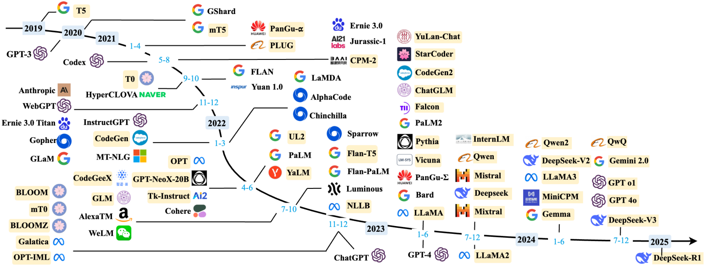
按照时间线，典型开源大模型
| 模型名称 | 发布时间 | 参数量（个） | 模型类型 | 预训练数据量 |
|---|---|---|---|---|
| T5 | 2019 年 10 月 | 110 亿 | 基础模型 | 1 万亿个词元 |
| PanGu-α | 2021 年 4 月 | 130 亿 | 基础模型 | 1.1 万亿个词元 |
| CPM-2 | 2021 年 6 月 | 1980 亿 | 基础模型 | 2.6 万亿个词元 |
| CodeGen | 2022 年 3 月 | 160 亿 | 基础模型 | 5770 亿个词元 |
| GPT-NeoX-20B | 2022 年 4 月 | 200 亿 | 基础模型 | 825GB |
| OPT | 2022 年 5 月 | 1750 亿 | 基础模型 | 1800 亿个词元 |
| GLM | 2022 年 10 月 | 1300 亿 | 基础模型 | 4000 亿个词元 |
| Flan-T5 | 2022 年 10 月 | 110 亿 | 对话模型 | - |
| BLOOM | 2022 年 11 月 | 1760 亿 | 基础模型 | 3660 亿个词元 |
| BLOOMZ | 2022 年 11 月 | 1760 亿 | 对话模型 | - |
| OPT-IML | 2022 年 12 月 | 1750 亿 | 对话模型 | - |
| LLaMa | 2023 年 2 月 | 652 亿 | 基础模型和对话模型 | 1.4 万亿个词元 |
| MOSS | 2023 年 2 月 | 160 亿 | 对话模型 | - |
| ChatGLM-6B | 2023 年 4 月 | 62 亿 | 基础模型和对话模型 | - |
| Alpaca | 2023 年 4 月 | 130 亿 | 对话模型 | - |
| Falcon | 2023 年 5 月 | 400 亿 | 基础模型 | 1 万亿个词元 |
| OpenLLaMA | 2023 年 5 月 | 130 亿 | 基础模型 | 1 万亿个词元 |
| Gorilla | 2023 年 5 月 | 67 亿 | 对话模型 | - |
| Baichuan | 2023 年 6 月 | 70-130 亿 | 基础模型和对话模型 | 1.4 万亿个词元 |
| LLaMA2 | 2023 年 7 月 | 70-700 亿 | 基础模型和对话模型 | 2.0 万亿个词元 |
| Qwen | 2023 年 8 月 | 70 亿 | 基础模型和对话模型 | 3.0 万亿个词元 |
| ChatGLM3-6B | 2023 年 9 月 | 60 亿 | 基础模型和对话模型 | 1.0 万亿个词元 |
| Mistral 7B | 2023 年 9 月 | 70 亿 | 基础模型和对话模型 | 8.0 万亿个词元 |
| InternLM-20B | 2023 年 9 月 | 200 亿 | 基础模型和对话模型 | 2.3 万亿个词元 |
| Grok-1 | 2023 年 10 月 | 3140 亿 | 基础模型和对话模型 | - |
| DeepSeek-LLM | 2023 年 11 月 | 70-670 亿 | 基础模型和对话模型 | 2.0 万亿个词元 |
| Qwen 1.5 | 2024 年 2 月 | 5-720 亿 | 基础模型和对话模型 | 3.0 万亿个词元 |
| Gemma | 2024 年 2 月 | 20-70 亿 | 基础模型和对话模型 | 6.0 万亿个词元 |
| MiniCPM-2B | 2024 年 2 月 | 20 亿 | 基础模型和对话模型 | 1.0 万亿个词元 |
| Grok-1 | 2024 年 2 月 | 3140 亿 | 对话模型 | - |
| LLaMA 3 | 2024 年 4 月 | 80-700 亿 | 基础模型和对话模型 | 15.0 万亿个词元 |
| Phi-3 | 2024 年 4 月 | 38-140 亿 | 对话模型 | 4.8 万亿个词元 |
| GLM-4-9B | 2024 年 6 月 | 90 亿 | 基础模型和对话模型 | 10.0 万亿个词元 |
| LLaMA 3.1 | 2024 年 7 月 | 80-4050 亿 | 基础模型和对话模型 | 15.0 万亿个词元 |
| Qwen 2.5 | 2024 年 9 月 | 5-720 亿 | 基础模型和对话模型 | 18.0 万亿个词元 |
| LLaMA 3.2 | 2024 年 9 月 | 10-900 亿 | 基础模型和对话模型 | 15.0 万亿个词元 |
| Hunyuan-Large | 2024 年 11 月 | 3890 亿 | 基础模型和对话模型 | 7.0 万亿个词元 |
| DeepSeek-V3 | 2024 年 12 月 | 6710 亿 | 对话模型 | 14.8 万亿个词元 |
| Phi-4 | 2024 年 12 月 | 140 亿 | 对话模型 | 10.0 万亿个词元 |
| DeepSeek-R1 | 2025 年 1 月 | 6710 亿 | 推理模型 | 14.8 万亿个词元 |
按照时间线，典型闭源大模型
| 模型名称 | 发布时间 | 发布公司 | 参数量（个） | 模型类型 |
|---|---|---|---|---|
| GPT-3 | 2020 年 5 月 | OpenAI | 1750 亿 | 基础模型 |
| ERNIE 3.0 | 2021 年 7 月 | 百度 | 100 亿 | 基础模型 |
| Claude | 2021 年 12 月 | Anthropic | 520 亿 | 基础模型 |
| InstructGPT | 2022 年 3 月 | OpenAI | 1750 亿 | 对话模型 |
| PaLM | 2022 年 4 月 | 5400 亿 | 基础模型 | |
| ChatGPT 3.5 | 2022 年 11 月 | OpenAI | 1750 亿 | 对话模型 |
| GPT-4 | 2023 年 3 月 | OpenAI | 17600 亿 | 对话模型 |
| PanGu-Σ | 2023 年 3 月 | 华为 | 10850 亿 | 对话模型 |
| ChatGLM | 2023 年 3 月 | 智谱华章 | 1300 亿 | 对话模型 |
| 文心一言 | 2023 年 4 月 | 百度 | - | 对话模型 |
| 通义千问 | 2023 年 5 月 | 阿里巴巴 | - | 对话模型 |
| MinMax | 2023 年 5 月 | 稀宇科技 | - | 对话模型 |
| 星火 | 2023 年 5 月 | 科大讯飞 | - | 对话模型 |
| 浦语书生 | 2023 年 6 月 | 浦江实验室 | - | 对话模型 |
| Claude 2 | 2023 年 7 月 | Anthropic | - | 对话模型 |
| Baichuan2 | 2023 年 9 月 | 百川 | 530 亿 | 对话模型 |
| Kimi | 2023 年 10 月 | 月之暗面 | - | 对话模型 |
| Gemini | 2023 年 12 月 | - | 对话模型 | |
| GLM-4 | 2024 年 1 月 | 智谱华章 | - | 对话模型 |
| Claude 3 | 2024 年 1 月 | Anthropic | - | 对话模型 |
| GPT-4o | 2024 年 5 月 | OpenAI | 2000 亿 | 对话模型 |
| 豆包 | 2024 年 5 月 | 字节跳动 | - | 对话模型 |
| 星火 2.0 | 2024 年 6 月 | 科大讯飞 | - | 对话模型 |
| Step-2 | 2024 年 7 月 | 阶跃星辰 | 10000 亿 | 对话模型 |
| GPT-o1 | 2024 年 9 月 | OpenAI | 3000 亿 | 对话模型 |
| Claude 3.5 | 2024 年 10 月 | Anthropic | - | 对话模型 |
| GPT-o3 | 2024 年 12 月 | OpenAI | - | 推理模型 |
| 豆包 1.5Pro | 2025 年 1 月 | 字节跳动 | - | 对话模型 |
| Grok-3 | 2025 年 2 月 | XAI | - | 对话推理模型 |
其中比较出名和重要的大语言模型
| 模型名称 | 链接 | 发布日期 | 是否开源 | 说明 |
|---|---|---|---|---|
| GPT-4 | OpenAI | 2023 年 3 月 | 闭源 | 知识型模型，知识截至2021 年 9 月 |
| GPT-4o | 2024 年 5 月 | 闭源 | 知识型模型，知识截至2023 年 10 月 | |
| GPT-4.5 | 2025 年 2 月 | 闭源 | 知识型模型，知识截至2023 年 10 月 | |
| GPT-4o mini | 2024 年 7 月 | 闭源 | 知识型模型，知识截至2023 年 10 月 | |
| o1 | 2024 年 9 月 | 闭源 | 推理型模型，知识截至2023 年 10 月 | |
| o1 mini | 2024 年 12 月 | 闭源 | 推理型模型，知识截至2023 年 10 月 | |
| o3 mini | 2025 年 1 月 | 闭源 | 推理型模型，知识截至2023 年 10 月 | |
| Claude 3 | Claude | 2024 年 3 月 4 日 | 闭源 | |
| Claude 3.5 Sonnet | 2024 年 10 月 | 闭源 | ||
| Claude 3.7 Sonnet | 2025 年 2 月 | 闭源 | ||
| Gemini 2.0 Pro | Gemini | 闭源 | 谷歌开发 | |
| Gemini 2.0 Flash | 闭源 | |||
| Gemini 2.0 Flash-Lite | 闭源 | |||
| Gemini 2.0 Flash Thinking | 闭源 | 推理型模型 | ||
| 文心一言 | 文心一言 | 2019 年发布基础版本 | 闭源 | 百度 |
| 火星大模型 | 火星大模型 | 2023 年 5 月首次发布 | 闭源 | 科大讯飞 |
| LLaMA 1.0 | LLaMa 官方地址 | 2023 年 2 月 | 开源 | Meta AI |
| LLaMA 2.0 | LLaMa 开源地址 | 2023 年 7 月 | 开源 | |
| LLaMA 3.0 | 2024 年 4 月 | 开源 | ||
| LLaMA 3.1 | 2024 年 7 月 | 开源 | ||
| LLaMA 3.3 | 2024 年 12 月 | 开源 | 只开源了 70B 的指令模型 | |
| ChatGLM | GLM使用地址 | 2023 年 3 月 | 开源 | 清华大学和智谱 AI 等合作研发的语言大模型 |
| GLM4 | GLM开源地址 | 2024 年 1 月 | 开源 | |
| Baichuan-7B/13B | 百川使用地址 | 2023 年 6 月 15 日 | 开源 | 百川智能 |
| Baichuan2 | 百川开源地址 | 2023 年 9 月 6 日 | 开源 | |
| Baichuan3 | 2024 年 1 月 29 日 | 闭源 | ||
| DeepSeek基础模型 | deepseek使用地址 | 2023 年 11 月 12 日 | 开源 | 深度求索 (DeepSeek) 团队 |
| DeepSeek-V2 | deepseek开源地址 | 2024 年 3 月 15 日 | 开源 | |
| DeepSeek-V2.5 | 2024 年 5 月 31 日 | 开源 | ||
| DeepSeek-R1 | 2024 年 10 月 | 开源 | ||
| DeepSeek-R1-Zero | 2025 年 2 月 | 开源 | ||
| Qwen | 通义千问使用地址 | 2023 年 9 月 | 开源 | 阿里巴巴 |
| Qwen2 | 通义千问开源地址 | 2024 年 6 月 6 日 | 开源 | |
| Qwen2.5 | 2025 年 3 月 1 日 | 开源 | ||
| QwQ-32B | 开源 | 性能可与具备 671B 参数（37B 激活参数）的 DeepSeek-R1 媲美 |
术语汇总
神经网络
- AI（Artificial General）：「人工智能」涵盖了各种技术和领域，目的是让计算机模仿、延伸甚至超越人类智能。
- AIGC（Artificial Intelligence Generated Content）：「人工智能生成内容」指的是利用AI技术，尤其是机器学习和深度学习模型，自动生成内容，如文本、图像、音乐或视频。AIGC通常专注于特定的创作任务，而不具备 AGI 的广泛智能和通用学习能力
- AGI（Artificial General Intelligence）：「通用人工智能」指能够像人类一样理解、学习并应用知识的系统，涵盖从问题解决到创造性任务的广泛领域
- NN（Neural Network）：「神经网络」一种模仿生物神经网络（例如人脑）的结构和功能的数学模型或计算模型，它主要用于对函数进行估计或近似，特别适用于处理复杂的非线性问题
- FNN（Feed-forward Neural Network）：「前馈神经网络」采用前馈传播范式的神经网络可以统称为前馈神经网络，FNN 网络结构中仅包含正向通路
- RNN（Recurrent Neural Network）：「循环神经网络」一类网络连接中包含环路的 神经网络的总称，因此，RNN 可以基于历史规律，对未来进行预测。基于 RNN 的语言模型，以词序列作为输入，基于被循环编码的上文和当前词来预测下一个词出现的概率
- CNN（Convolutional Neural Network）：「卷积神经网络」使用卷积层来自动并有效地检测视觉输入中的空间层次特征，广泛应用于图像和视频分析等领域
- MLP（Multi-Layer Perception）：「多层感知机」也叫人工神经网络（ANN，Artificial Neural Network），他的特点是层级之间为全连接，通常用于分类回归任务；
- DNN（Deep Neural Network）：「深度神经网络」和 ANN 类似，但是其中间部分可以是多个全连接层，也可以是定义的任何技术或者数学公式来塑造中间网络的每一层或者每一个部分
- DL（Deep Learning）：「深度学习」是机器学习中的一种基于人工神经网络的机器学习方法，其关键在于通过多层神经网络对输入数据进行逐层抽象和表示学习，从而实现对复杂数据结构和非线性关系的建模，目标是学习样本数据的内在规律和表示层次，最终目标是让机器能够像人一样具有分析学习能力，能够识别文字、图像和声音等数据
- NLP（Natural Language Processing）：「自然语言处理」研究如何让计算机读懂人类语言，即将人的自然语言转换为计算机可以阅读的指令，其任务的目标就是在自然语言领域让机器拥有人类的智慧，理解句子的含义
关于人工智能、机器学习、人工神经网络和深度学习的关系
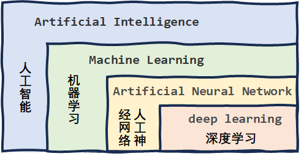
网络模型
- GAN（Generative adversarial network）：「生成对抗网络」是一种图像生成网络，通过生成器和判别器对抗进行对抗训练
- DDPM（Denoising Diffusion Probabilistic Model）：「扩散模型」是2020年提出的一种生成模型，可以用于图像生成
- SD（Stable Diffusion）：「潜在扩散模型」，目前市面上绝大部分 AI 图文生成都是基于 SD 实现的
- AR（Autoregressive Model）：「自回归模型」是用自身做回归变量的过程，即利用前期若干时刻的随机变量的线性组合来描述以后某时刻随机变量的线性回归模型，它是时间序列中的一种常见形式
- LSTM（Long Short-Term Memory）：「长短时记忆网络」一种特殊的 RNN 架构，解决 RNN 处理长序列数据时面临着严重的梯度消失问题，得网络能够更好地处理序列中的长期依赖关系
- Transformer：一类基于注意力机制（Attention）的模块化构建的神经网络结构，基于 Transformer 的语言模型，以词序列作为输入，基于一定长度的上文和当前词来预测下一个词出现的概率
- BERT（Bidirectional Encoder Representation from Transformers）：2018年10月由Google AI研究院基于 Transformer 提出的一种预训练模型
- MOE（(Mixed Expert Model）：「混合专家模型」希望在有限计算资源预算下，用更少训练步数训练更大模型，核心思想是模型不同部分（即“专 家”）专注不同任务或数据层面。
模型训练
- Batch：「批/一批样本」指将整个训练样本分成若干个批，一次输入模型的一组样本
- Batch Size：「批大小」指每批样本的大小，一次输入模型的一组样本的具体样本数量
- Step：「步骤」表示在一个 epoch 中模型进行一次参数更新的操作
- Iteration：「迭代」指训练一个 Batch 就是一次 Iteration
- Epoch：一个 Epoch 就是将所有训练样本训练一次的过程（训练一次包括前向传播、计算损失、反向传播和参数更新）
- LR（Learning Rate）：「学习率」是深度学习中一个至关重要的超参数，它决定了模型在训练过程中更新权重参数的速度与方向
- Loss：「损失函数」衡量的是模型预测值与真实值之间的差异，通过反向传播指导模型参数更新的目标和方向
- forward propagation：「前向传播」指的是按顺序(从输入层到输出层)计算和存储神经网络中每层的结果
- BP（backward propagation）：「反向传播」指的是计算神经网络参数梯度的方法，其原理是基于微积分中的链式规则，按相反的顺序从输出层到输入层遍历网络，依次计算每个中间变量和参数的梯度
- GD（gradient descent）：「梯度下降」是一种优化算法，也是神经网络模型训练中最为常见的优化器，还有很多其他的优化器例如「随机梯度下降」和「小批量随机梯度下降」等等
- Vanishing Gradients：「梯度消失」是指在深层神经网络的反向传播中，梯度逐层指数级减小，导致浅层网络权重几乎不更新，无法有效学习
- Exploding Gradients：「梯度爆炸」是指梯度逐层指数级增大，导致权重更新步长过大，模型参数剧烈震荡甚至溢出（NaN）
- Finetune：「微调」实际上就是对一个已经训练好的模型，冻结模型部分权重，再用特定训练集重新训练并更新其余权重
- SFT（Supervised Fine-Tuning）：「有监督微调」就是使用已标注的数据集来进行微调
- TensorFlow：一个广泛使用的深度学习框架
- Pytorch：另一个广泛使用的深度学习框架
LLM 相关
- LM（Language Models）：「语言模型」是一种「人工智能系统」，旨在处理、理解和生成类似人类的语言。它们从大型数据集中学习模式和结构，使得能够产生连贯且上下文相关的文本，应用于翻译、摘要、聊天机器人和内容生成等领域
- LLM（Large Language Models）:「大语言模型」和「语言模型」交替使用，但严格来说，LLMs 专指那些包含数百万甚至数十亿参数的语言模型
- PEFT（Parameter-Efficient Fine-Tuning）：「参数高效微调」旨在避免微调全部参数，减少在微调过程中需要更新的参数数量和计算开销，从而提高微调大语言模型的效率。
- LoRA（Low-Rank Adaptation）：「低秩适应」是参数高效微调最常用的方法，本质就是用更少的训练参数来近似LLM全参数微调所得的增量参数，从而达到使用更少显存占用的高效微调，其核心思想是，在冻结预训练模型权重后，将可训练的低秩分解矩阵注入到的 Transformer 架构的每一层中，从而大大减少了在下游任务上的可训练参数量，在推理时，对于使用LoRA的模型来说，可直接将原预训练模型权重与训练好的LoRA权重合并，因此在推理时不存在额外开销。
- RLHF（Reinforcement Learning from Human Feedback）：「人类反馈强化学习」是由 InstructGPT 模型提出的一种强化学习训练方法
- Agent：「智能体」是一种能够自主感知环境并采取行动以实现特定目标的实体
- LLaMA（Large Language Model Meta AI）：「LLaMA」模型是由 Meta AI 开发的一系列大语言模 型，其模型权重在非商业许可证下向学术界开放，推动了大语言模型的“共创”和知识共享
- Prompt：「指令」是指向模型提供输入以引导其生成特定输出的文本或指令
- ICL（In-Context Learning）：「上下文学习」能力指语言模型能够通过给定的任务说明或示例等信息来掌握处理新任务的能力
- COT（Chain of Thought）：「思维链」是一种改进的提示策略，用于提高 LLM 在复杂推理任务中的性能，如算术推理、常识推理和符号推理
- RAG（Retrieval-Augmented Generation）：「检索增强生成」指从外部数据库中检索出相关信息来辅助改善大语言模型 生成质量的系统
- PTQ（Post-Training Quantization）：「训练后量化」是一种对已完成训练的模型进行量化的方法， 无需重新训练原有模型，从而避免了高昂的计算成本。
- QAT（Quantization-Aware Training）：「量化感知训练」通过在模型训练过程中整合模拟量化效应 的层，使权重适应量化引起的误差，从而提高任务性能。
大型语言模型简史1
本篇博客更多的是以科普为主，因此不摘取具体的技术性内容，想要了解的可以自行查看原文或者网上搜索相关内容
LLM 简述
大多数 LLMs 以「自回归方式」（Autoregressive）操作，这意味着它们根据前面的文本预测下一个字的「概率分布」(propability distribution)

LLM 的自回归特性使其能够根据前面内容提供的上下文，逐字生成文本。从一个「提示」(prompt)开始，模型会逐步预测下一个字，直到完成整个序列或达到预设的停止条件，尤如文字接龙游戏

通过这种逐字生成的方式，LLM可以创作出逻辑连贯且贴合上下文的内容，成为创意写作、对话生成以及代码补全等任务的强大工具。
Transformer（2017）
2017年，Vaswani 等人通过其开创性论文《Attention is All You Need》引入了 Transformer 架构，这标志着自然语言处理（NLP）领域的一个重要转折点。Transformer 解决了早期模型（如循环神经网络 RNN 和长短期记忆网络 LSTM）的关键限制。这些传统模型在处理长程依赖性和顺序输入时面临诸多挑战，例如计算效率低下、训练时间过长以及梯度消失问题。这些问题使得基于 RNN 或 LSTM 的语言模型难以实现高效且准确的性能。而 Transformer 的出现克服了这些障碍，彻底改变了 NLP 领域的研究范式，并为现代大型语言模型的发展奠定了坚实基础。Transformer 的架构图如下所示。
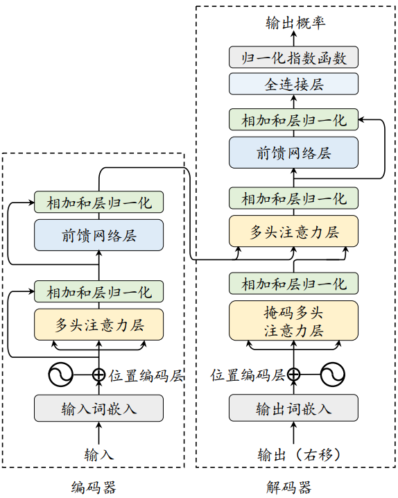
核心创新：自注意力机制 (Self-Attention)、多头注意力(Multi-Head Attention)、前馈网络(Feed-Forward Network, FFN)和层归一化(Layer Norm)、位置编码(Positional Encoding)
对语言建模的影响
- 可扩展性：Transformer 实现了完全并行化的计算方式，这使得在大规模数据集上训练超大模型成为可能。相比传统的 RNN 和 LSTM，Transformer的计算效率更高，能够充分利用现代硬件（如 GPU 和 TPU）的并行计算能力。
- 上下文理解：自注意力机制能够同时捕捉局部和全局依赖关系，显著提高了模型对上下文的理解能力。这种能力使Transformer生成的文本更加连贯，语义更加准确，尤其在处理复杂任务（如翻译、问答和文本生成）时表现出色。
Transformer的提出不仅是NLP领域的一次重大突破，更是人工智能发展史上的一个重要里程碑。它通过自注意力机制、多头注意力、位置编码等创新设计，解决了传统模型的诸多局限性，为未来的语言建模和深度学习研究开辟了全新的可能性。
预训练Transformer模型时代（2018–2020）
2017年Transformer架构的引入为NLP的新时代铺平了道路，其特点是预训练模型的兴起和对扩展的前所未有的关注。这一时期见证了两个有影响力的模型家族的出现：BERT 和 GPT，它们展示了大规模预训练和微调范式的强大功能。
BERT：双向上下文理解 (2018)
2018年，谷歌推出了 BERT（Bidirectional Encoder Representations from Transformers），这是一种使用 Transformer 编码器 (Encoder) 的突破性模型，在广泛的NLP任务中取得了最先进的性能
关键创新：掩码语言建模（Masker Language Modeling — MLM）、下一句预测（Next Sentence Prediction — NSP）
BERT的影响：BERT的双向训练使其在GLUE（通用语言理解评估）和SQuAD（斯坦福问答数据集）等基准测试中取得了突破性的表现。它的成功证明了上下文嵌入（Embedding）的重要性， 并为新一代预训练模型铺平了道路。
GPT：生成式预训练和自回归文本生成 (2018–2020)
虽然BERT优先考虑双向上下文理解，但OpenAI的GPT系列采用了不同的策略，专注于通过自回归预训练实现生成能力。通过利用**Transformer的解码器(Decoder)**，GPT模型在自回归语言模型和文本生成方面表现出色。
GPT 发展过程
GPT (2018): 单向解码器Transformer建模
2018年6月，GPT系列的首个版本问世，首次引入了仅解码器的Transformer架构，参数规模达1.17亿，成为自然语言处理领域的重要突破。该模型通过单向自回归方法在4.6GB高质量文本数据上进行训练，能够基于先前的标记预测下一个标记。凭借对自然语言序列依赖关系的精准捕捉，它在文本补全、摘要生成和对话生成等生成任务中表现优异。
GPT-2 (2019): 扩展语言模型以实现广义零样本学习
GPT-2于2019年2月发布，相较于前代实现了重大升级，参数量达到15亿，并在40GB多样化的互联网文本上进行训练。GPT-2引入了突破性的零样本学习能力，能够在不进行任务特定微调的情况下完成诸如撰写文章、回答问题、摘要生成和翻译等任务
GPT-3 (2020): 大规模语言模型的崛起
GPT-3于2020年6月发布，凭借其惊人的1750亿参数彻底改变了人工智能领域，成为当时规模最大的语言模型。它在庞大且多样化的文本语料库上进行训练，展现了卓越的少量样本和零样本学习能力，能够以极少甚至无需示例完成诸如撰写文章、生成代码、解决推理问题以及创意写作等任务。
GPT的影响及规模的作：GPT模型的引入，特别是GPT-3，标志着AI的一个变革时代，展示了自回归架构和生成能力的强大功能。这些模型为内容创作、对话代理和自动推理等应用开辟了新的可能性，在广泛的任务中达到了接近人类的表现。GPT-3凭借其1750亿参数证明了规模的深远影响，表明在大规模数据集上训练的更大模型可以树立新的AI能力标杆
从 GTP-3 开始，Open AI 走上了闭源的不归路，只能说后续美股跌的不冤
后训练对齐：弥合AI与人类价值观之间的差距 (2021–2022)
GPT-3（一个拥有1750亿参数的LLM）生成几乎无法与人类写作区分的文本的能力引发了关于AI生成内容的真实性和可信度的重大担忧。尽管这一成就标志着AI发展的一个重要里程碑，但也突显了确保这些模型与人类价值观、偏好和期望保持一致的关键挑战。一个主要问题是「幻觉」（Hallucination），即LLM生成与事实不符、无意义或与输入提示矛盾的内容，给人一种一本正经地胡说八道的印象。为了解决这些挑战，2021年和2022年的研究人员专注于改善与人类意图的一致性并减少幻觉，导致了监督微调（SFT）和基于人类反馈的强化学习（RLHF）等技术的发展。
其中 RLHF 的工作流程如下图所示
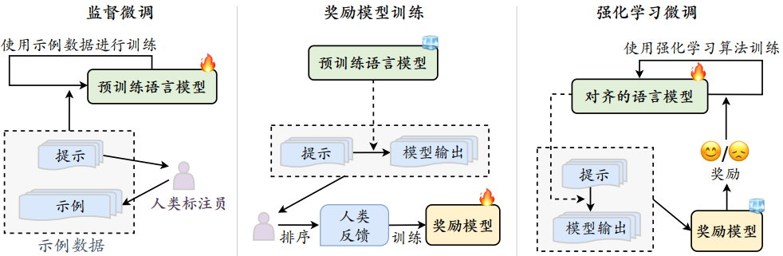
ChatGPT：推进对话式AI (2022)
2022年3月，OpenAI推出了GPT-3.5，这是GPT-3的升级版，架构相同但训练和微调有所改进。关键增强包括通过改进数据更好地遵循指令，减少了幻觉（尽管未完全消除），以及更多样化、更新的数据集，以生成更相关、上下文感知的响应。
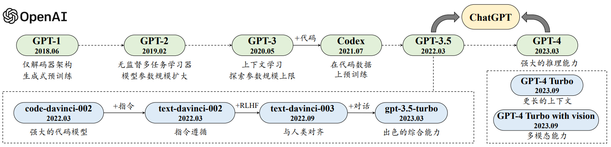
基于GPT-3.5和InstructGPT，OpenAI于2022年11月推出了ChatGPT，这是一种突破性的对话式AI模型，专门为自然的多轮对话进行了微调，其发展过程如上图所示。
ChatGPT的推出标志着AI的一个关键时刻，通常被称为**「ChatGPT时刻」(ChatGPT moment)**，因为它展示了对话式AI改变人机交互的潜力。
多模态模型：连接文本、图像及其他 (2023–2024)
在2023年至2024年间，像GPT-4, GPT-4V和GPT-4o这样的多模态大型语言模型（MLLMs）通过将文本、图像、音频和视频整合到统一系统中重新定义了AI。这些模型扩展了传统语言模型的能力，实现了更丰富的交互和更复杂的问题解决。
GPT-4V：视觉遇见语言
2023年，OpenAI推出了GPT-4V，将GPT-4的语言能力与先进的计算机视觉相结合。它可以解释图像、生成标题、回答视觉问题，并推断视觉中的上下文关系。其跨模态注意力机制允许文本和图像数据的无缝集成，使其在医疗保健（如分析医学图像）和教育（如互动学习工具）等领域具有价值。
GPT-4o：全模态前沿
到2024年初，GPT-4o通过整合音频和视频输入进一步推进了多模态。它在一个统一的表示空间中运行，可以转录音频、描述视频或将文本合成音频。实时交互和增强的创造力 — — 如生成多媒体内容 — — 使其成为娱乐和设计等行业的多功能工具。
开源和开放权重模型 (2023–2024)
在2023年至2024年间，开源和开放权重AI模型获得了动力，使先进AI技术的访问民主化。
- 开放权重LLMs：开放权重模型提供公开访问的模型权重，限制极少。这使得微调和适应成为可能，但训练架构和训练数据保持封闭。它们适合快速部署。例子：Meta AI的LLaMA系列和Mistral AI的Mistral 7B / Mixtral 8x7B
- 开源LLMs：开源模型使底层代码和结构公开可用。这允许全面理解、修改和定制模型，促进创新和适应性。例子：OPT和BERT。
- 社区驱动的创新：像Hugging Face这样的平台促进了协作，LoRA和PEFT等工具使高效的微调成为可能。
推理模型：从「系统1」到「系统2」思维的转变 (2024)
2024年，AI开发开始强调增强「推理」，从简单的模式识别转向更逻辑化和结构化的思维过程。这一转变受到认知心理学双重过程理论的影响，区分了「系统1」（快速、直觉）和「系统2」（缓慢、分析）思维。虽然像GPT-3和GPT-4这样的早期模型在生成文本等「系统1」任务上表现出色，但在深度推理和问题解决方面却有所欠缺。
OpenAI-o1：推理能力的一大飞跃(2024)
OpenAI-o1-preview
2024年9月12日，OpenAI发布的o1-preview标志着人工智能能力的重大飞跃，尤其是在解决复杂推理任务（如数学和编程）方面。与传统LLMs不同，推理模型采用了「长链思维」（Long CoT） — — 即内部的推理轨迹，使模型能够通过分解问题、批判自己的解决方案并探索替代方案来“思考”问题。这些CoTs对用户是隐藏的，用户看到的是一个总结性的输出。

推理模型的关键特性包括
- 长链思维（Long CoT） ：使模型能够将复杂问题分解为更小的部分，批判性地评估其解决方案，并探索多种方法，类似于搜索算法。
- 推理时计算控制 ：对于更复杂的问题，可以生成更长的CoTs；而对于较简单的问题，则使用较短的CoTs以节省计算资源。
- 增强的推理能力 ：尽管像o1-preview这样的初始推理模型在某些领域的能力不如标准LLMs，但在推理任务中，它们的表现远远超越了后者，常常能与人类专家媲美。例如，o1-preview在数学（AIME 2024）、编程（CodeForces）和博士级别的科学问题上均超越了GPT-4o。
OpenAI-o1
2024年12月5日，OpenAI的完整版o1模型进一步提升了性能，在美国AIME 2024数学考试中排名前500名学生之列，并显著超越了GPT-4o（解决了74%-93%的AIME问题，而GPT-4o仅为12%）。此外，o1-mini作为更便宜且更快的版本，在编码任务中表现出色，尽管其成本仅为完整版o1的20%。
OpenAI-o3
2025年1月31日，OpenAI发布了o3，这是其推理模型系列的最新突破，建立在o1模型成功的基础之上。尽管完整的o3模型尚未发布，但其在关键基准测试中的表现被描述为具有开创性。
OpenAI-o1和OpenAI-o3推理模型的发布代表了人工智能领域的重大进步，通过结构化的内部推理过程提供了卓越的问题解决能力，并在复杂数学和编程任务中树立了新的标杆。
成本高效的推理模型
LLMs通常需要极其庞大的计算资源来进行训练和推理。像GPT-4o和OpenAI-o1这样的最先进LLM模型的闭源性质限制了对尖端AI的普及化。
DeepSeek-V3 (2024–12)
2024年12月下旬，「深度求索-V3」(DeepSeek-V3)作为一种成本高效的开放权重LLM出现，为AI的可访问性设定了新标准。DeepSeek-V3与OpenAI的ChatGPT等顶级解决方案相媲美，但开发成本显著降低，估计约为560万美元，仅为西方公司投资的一小部分。该模型最多包含6710亿个参数，其中370亿个活跃参数，并采用专家混合（MoE）架构，将模型划分为专门处理数学和编码等任务的组件，以减轻训练负担。DeepSeek-V3采用了工程效率，例如改进Key-Value缓存管理和进一步推动专家混合方法。该模型引入了三个关键架构：
- 多头潜在注意力（Multi-head Latent Attention — MLA）：通过压缩注意力键和值来减少内存使用，同时保持性能，并通过旋转位置嵌入（RoPE）增强位置信息。
- DeepSeek专家混合（DeepSeekMoE）：在前馈网络（FFNs）中采用共享和路由专家的混合，以提高效率并平衡专家利用率。
- **多标记预测 (Multi-Token Prediction — MTP)**：增强模型生成连贯且上下文相关的输出的能力，特别是对于需要复杂序列生成的任务。
DeepSeek-R1-Zero 和 DeepSeek-R1 (2025–01)
仅仅一个月后，2025年1月下旬，DeepSeek通过发布DeepSeek-R1-Zero和DeepSeek-R1再次引起轰动，这些模型展示了卓越的推理能力，训练成本极低。利用先进的强化学习技术，这些模型证明了高性能推理可以在没有通常与尖端AI相关的巨额计算费用的情况下实现。这一突破巩固了DeepSeek作为高效和可扩展AI创新领导者的地位。
DeepSeek-R1-Zero：一种基于DeepSeek-V3的推理模型，通过强化学习（RL）增强其推理能力。它完全消除了「监督微调」(SFT)阶段，直接从名为DeepSeek-V3-Base的预训练模型开始。它采用了一种基于「规则的强化学习方法」(Rule-based Reinforcement Learning)，称为「组相对策略优化」（Group Relative Policy Optimization — GRPO），根据预定义规则计算奖励，使训练过程更简单且更具可扩展性。
DeepSeek-R1：为了解决DeepSeek-R1-Zero的局限性，如低可读性和语言混杂，DeepSeek-R1纳入了一组有限的高质量冷启动数据和额外的RL训练。该模型经历了多个微调和RL阶段，包括拒绝采样和第二轮RL训练，以提高其通用能力和与人类偏好的一致性。
蒸馏DeepSeek模型：DeepSeek开发了较小的、蒸馏版的DeepSeek-R1，参数范围从15亿到700亿，将先进的推理能力带到较弱的硬件上。这些模型使用原始DeepSeek-R1生成的合成数据进行微调，确保在推理任务中表现出色，同时足够轻量化以便本地部署。
QwQ-32B（2025-03）
2025年3月6日，阿里云Qwen团队发布了其最新研究成果QwQ-32B推理模型，该成果通过大规模强化学习技术突破性地提升了语言模型的智能水平，这款拥有32B参数的模型性能远超同样在QWen32B上训练出来的DeepSeek-R1-Distill-Qwen32B。展现出与DeepSeek-R1（激活参数37B/总参数671B）相匹敌的性能，标志着强化学习在预训练模型优化中的显著成效。
总结
从2017年Transformer架构的提出到2025年DeepSeek-R1的发展，大型语言模型（LLMs）的演进标志着AI领域进入了一个革命性的新阶段。这一历程由四个里程碑式的成就所定义：
- Transformers (2017) ：Transformer架构的引入为构建大规模高效模型奠定了基础，使其能够以前所未有的精确性和灵活性处理复杂任务。
- GPT-3 (2020) ：这一模型展示了规模在AI中的变革性力量，证明了通过在海量数据集上训练的巨大模型，可以在广泛的应用场景中实现接近人类水平的表现，为AI能力设定了新的基准。
- ChatGPT (2022) ：通过将对话式AI带入主流，ChatGPT让高级AI技术变得更加亲民和互动，使普通用户也能轻松使用。同时，它引发了关于AI广泛应用所带来的伦理和社会影响的重要讨论。
- DeepSeek-R1 (2025) ：DeepSeek-R1通过采用「专家混合」（MoE）、 「多头潜在注意力」（MLA）以及「多标记预测」（MTP），结合高效的多阶段强化学习（RL）训练算法，实现了推理过程优化，并将运营成本削减高达50倍，相较于许多领先的闭源模型。其开源特性加速了尖端AI应用的普及，赋予各行业创新者更多能力，同时也突显了可扩展性、对齐性和可访问性在未来AI发展中的重要性。
LLMs正逐步演变为多功能、多模态的推理系统，能够同时满足普通用户和特定需求。这一演变得益于突破性技术创新，以及在规模、易用性和成本效益上的显著提升，推动人工智能朝着更加包容和影响力深远的方向迈进。
大语言模型数据集
大语言模型预训练所需的数据来源大体上分为通用数据和专业数据两大类。
通用数据（General Data）包括网页、图书、新闻、对话文本等，通用数据具有规模大、多样性和易获取等特点，因此支持大语言模型的语言建模和泛化能力。
书籍（Book）：受限于版权因素，开源书籍数据集很少，现有的开源大 语言模型研究通常采用 Pile 数据集中提供的 Books 3 和 BookCorpus 2 数据集。
多语言数据（Multilingual Text）：BLOOM 的预训练数据中包含 46 种语言的数据，PaLM的预训练数据中甚至包含高达 122 种语言的数据。
科学文本（Scientific Text）：科学文本数据的来源主要包括 arXiv 论 文、PubMed 论文、教材、课件和教学网页等。
百科（Encyclopedia）：百科全书、在线百科网站及其他知识数据库。
代码（Code）：代码的主要来源是编程问答社区（如 Stack Exchange） 和公共软件仓库（如 GitHub）。
专业数据（Specialized Data）包括多语言数据、 科学文本数据、代码及领域特有资料等。通过在预训练阶段引入领域数据可以有效提升大语言模型的任务解决能力。
金融领域：BBT-FinCorpus 是一个大规模的中文金融领域语料库，由公司公告、研究报告、金融 新闻和社交媒体这四个部分组成。FinCorpus 是一个中文金融领域语料库，包含公司公告、金融信息与新闻、金融考试题目等。FinGPT 收集了金融新闻、社交媒体、金融监管机构文件、金融趋势分析文章以及金融学术数据集等数据。
医疗领域：包含大量的医学文本语料库（包括结构化和非结构化文本），包 括电子健康记录、临床记录以及医学文献等。PubMed、MIMIC-III、Medical-GPT 等
法律领域：也包含许多可用于模型训练的数据资源，主要包括法律法规、裁判文书等法律数据
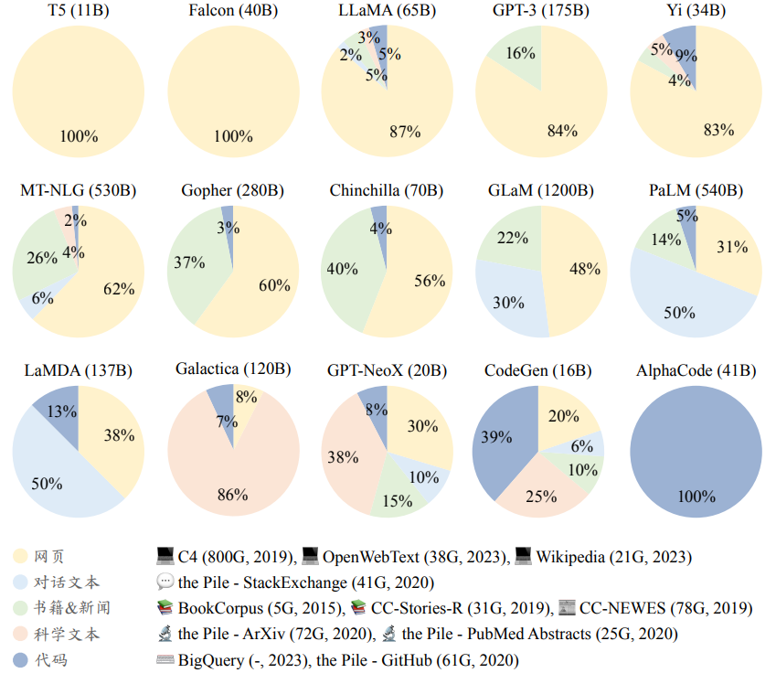
上图给出了一些典型的大语言模型所使用数据类型的分布情况。可以看到，不同的大语言模型在训练数据类型分布上的差距很大，截至 2025 年 2 月，业界关于预训练数据的配比还没达成广泛的共识。
大语言模型的相关研究表明，数据质量对于模型的影响非常大。因此，在收集了各种类型的数据之后，需要对数据进行处理，去除低质量数据、重复数据、有害信息、个人隐私等内容。 典型的数据处理流程如图所示
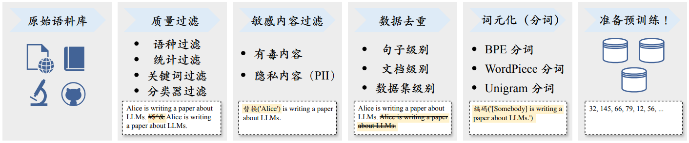
大语言模型架构
本节主要讨论并介绍 Encoder-only、Encoder-Decoder 以及 Decoder-only 三种主流的语言模型架构。在语言模型的发展历程中，Transformer 框架的问世代表着一个划时代的转折点。其独特的自注意力（Self-Attention）机制极大地提升了模型对序列数据的处理能力，在捕捉长距离依赖关系方面表现尤为出色。此外，Transformer 框架对并行计算的支持极大地加速了模型的训练过程。当前，绝大多数大语言模型均以 Transformer 框架为核心，并进一步演化出了三种经典架构，分别是 Encoder-only 架构，Decoder-only 架构以及 Encoder-Decoder 架构。
其中，随着 Decoder-only 架构展现出的强大能力，当下 Decoder-only 架构已成为主流，目前的 LLM 都是基于 Decoder-only 架构。
在介绍架构之前，先简要介绍一下分词向量化
Token
在输入文本进入大模型之前，需要将它拆分成一个 Token 的序列，其中 Token 是承载语义的最小单元，标识具体某个词，并且每个 Token 由 Token ID 唯一标识。将文本转化为 Token 的过程称之为「分词」（Tokenization），实现转换的就是「分词器」（tokenizer）
以“小浣熊吃干脆面”这样一句话，经过分词处理之后，会变成一个 Token 序列，每个 Token 有对应的 Token ID。在完成分词之后，这些 Token 随后会经过模型的嵌入矩阵（Embedding Matrix） 处理，转化为固定大小的表征向量。这些向量序列被直接输入到模型中，供模型理解和处理。在模型生成阶段，模型会根据输入的向量序列计算出词表中每个词的 概率分布。模型从这些概率分布中选择并输出对应的 Token，这些 Token 再被转换 为相应的文本内容。
简单理解，就是一段话通过分词器被拆分成多个单词或短句，每个单词就叫 Token，每个 Token 会通过分词表得到 Token ID，再通过静态（转换矩阵）或动态（预训练编码器）的方式转换为向量矩阵/语义嵌入，再送入模型进行训练
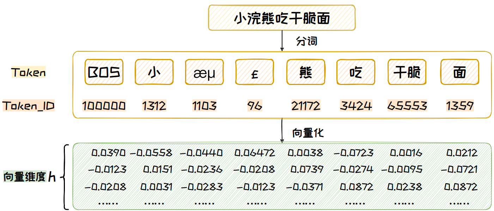
在构建大语言模型的词表时，分词器依赖于分词算法，例如 BBPE、BPE、WordPiece 等，不同的分词器得到的 Token 序列也不尽相同。
每个大语言模型都有自己的分词器，分词器维护一个词表，能够对文本进行 分词。分词器的质量对模型的性能有着直接的影响。一个优秀的分词器不仅能显著提升模型对文本的理解能力，还能够提高模型的处理速度，减少计算资源的消耗。一个好的分词器应当具备以下特点：
- 首先，它能够准确地识别出文本中的关键词和短语，从而帮助模型更好地捕捉语义信息；
- 其次，分词器的效率直接影响到模型的训练和推理速度，一个高效的分词器能够实现对文本 Token 的优化压缩，进而显著缩短模型在处理数据时所需的时间。
| 模型 | 词表大小 | 中文分词效率 （字 / Token） | 英文分词效率 （词 / Token） |
|---|---|---|---|
| LLaMA1 | 32000 | 0.6588 | 0.6891 |
| LLaMA2 | 32000 | 0.6588 | 0.6891 |
| LLaMA3 | 128256 | 1.0996 | 0.7870 |
| DeepSeek-V1 | 100016 | 1.2915 | 0.7625 |
| DeepSeek-V2 | 100002 | 1.2915 | 0.7625 |
| GPT-3.5 & GPT-4 | 100256 | 0.7723 | 0.7867 |
| GPT-3 | 50257 | 0.4858 | 0.7522 |
| Qwen-1.5 | 151646 | 1.2989 | 0.7865 |
| StarCoder | 49152 | 0.9344 | 0.6513 |
表是对常见开源大语言模型的分词器的对比分析，其中中文语料库节选自《朱自清散文》 ，英文语料库来自莫泊桑短篇小说《项链》，像 DeepSeek、Qwen 这类中文开源大语言模型，对中文分词进行了优化，平均每个 Token 能够表示 1.3 个字（每个字仅需 0.7 个 Token 即可表示），一些 常用词语和成语甚至可以直接用一个 Token 来表示。相比之下，以英文为主要语料的模型，如 GPT-4、LLaMA 系列，对中文的支持度较弱，分词效率不高。
Encoder-only 架构
Encoder-only 架构仅选取了 Transformer 中的编码器（Encoder）部分，用于接 收输入文本并生成与上下文相关的特征。具体来说，Encoder-only 架构包含三个部分，分别是输入编码部分，特征编码部分以及任务处理部分。
Encoder-only 架构如下所示
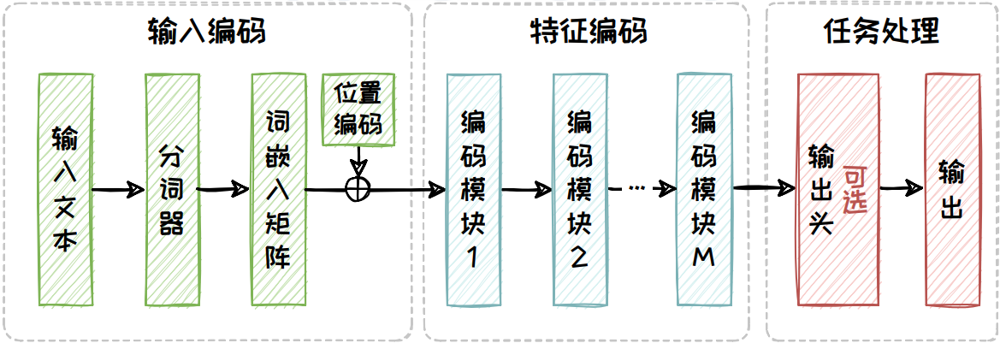
输入编码部分
原始输入文本会被分词器（Tokenizer）拆解为 Token 序列， 随后通过词表和词嵌入（Embedding）矩阵映射为向量序列，确保文本信息得以数字化表达。接着为了保留文本中单词的顺序信息，每个向量序列会被赋予位置编码（Positional Encoding）。
简单理解就是文本转换为语义嵌入后，再在语义嵌入上添加位置编码信息
特征编码部分
先前得到的向量序列会依次通过一系列编码模块，这些模块通过自注意力机制和前馈网络进一步提取和深化文本特征
简单理解就是前面得到的语义嵌入+位置编码信息后的编码送到网络中进行前向传播（输入和参数的线性和非线性的计算）
任务处理部分
在预训练阶段和下游 任务适配阶段一般有所差别。在预训练阶段，模型通常使用全连接层作为输出头，用于完成掩码预测等任务。而在下游任务适配阶段，输出头会根据具体任务需求进行定制。
简单理解就是对于 Encoder-only 框架，你最终的输出还是一堆向量，所以要想利用这些向量，就需要接 decoder（解码器），例如接一个分类器，可以实现文本分类，接一个 FC（全连接层），可以预测后续 Token，用于文本摘要
适用任务
Encoder-only 架构中的双向注意力机制允许模型在预测每个 Token 时都充分 考虑序列中的前后文信息，捕捉丰富的语义和依赖关系。因此，Encoder-only 架构 的模型特别适合于自然语言理解（Natural Language Understanding, NLU）任务，如 情感分析或文本分类等判别任务。
简单来说，就是用于分类任务
Encoder-only 架构的代表性大语言模型：BERT 及其变体 RoBERTa、ALBERT 等
Encoder-Decoder 架构
为了弥补 Encoder-only 架构在文本生成任务上的短板，Encoder-Decoder 架构 在其基础上引入了一个解码器（Decoder），并采用交叉注意力机制来实现编码器与 解码器之间的有效交互。Encoder-Decoder 架构主要包含编码器和解码器两部分，Encoder-Decoder 架构如图所示。
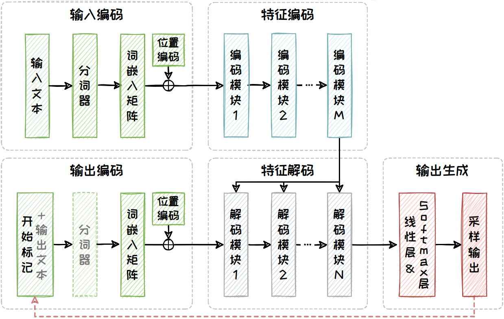
其中分词器和输出文本只在训练阶段存在，而实现 “自回归”的红色虚线只在推理阶段存在。
具体来说，解码器包含了输出编码、特征解码以及输出生成三个部分
输出编码
与编码器中的输入编码结构相同，包含分词、向量化以及添加位置编码三个过程，将原始输入文本转换化为带有位置信息的向量序列
特征解码
部分与特征编码部分在网络结构上也高度相似，包括掩码自注意力（Masked Self-Attention）模块，交叉注意力模块和全连接前馈模块。
输出生成
由一个线性层以及一个 Softmax 层组成，负责将特征解码后的向量转换为词表上的概率分布，并从这个分布中采样得到最合适的 Token 作为输出。
简单理解就是特征编码通过 Softmax 计算得到对应词表中哪个词的概率最高，然后选最高概率的 Token 输出
在推理阶段，由于缺少了真实的输出文本，所以输出序列原始状态只有开始标记 [START]，也不再需要分词器。模型需要通过自回归的方式，在每轮采样生成 Token 后，会将其拼接到输出序列中，用于下一轮预测。这个过程循环进行，直到 生成特定的结束标记 [end] 或达到模型设定的最大输出长度。
适用任务
Encoder-Decode 架构在 Encoder-only 架构的基础上添加了解码器，使模型 够基于编码器输出的上下文表示逐步生成输出序列。这种编码器和解码器的结合， 使得模型可以有效地处理复杂的输入条件，并生成相关且连贯的高质量内容。因此，Encoder-Decoder 架构的模型非常适合于处理各种复杂的有条件生成任务，例如机器翻译、文本摘要和问答系统等需要同时理解输入并生成相应输出的场景
简单来说，针对语言模型，就是文本到文本的输出的相关任务
Encoder-Decoder 架构的代表性大语言模型：T5 和 BART
Decoder-only 架构
为了有效缩减模型的规模以及降低整体的计算复杂度，Decoder-only 架构摒弃 了 Encoder-Decoder 架构中的编码器部分以及与编码器交互的交叉注意力模块。在 这种架构下，模型仅使用解码器来构建语言模型。这种架构利用“自回归”机制， 在给定上文的情况下，生成流畅且连贯的下文。
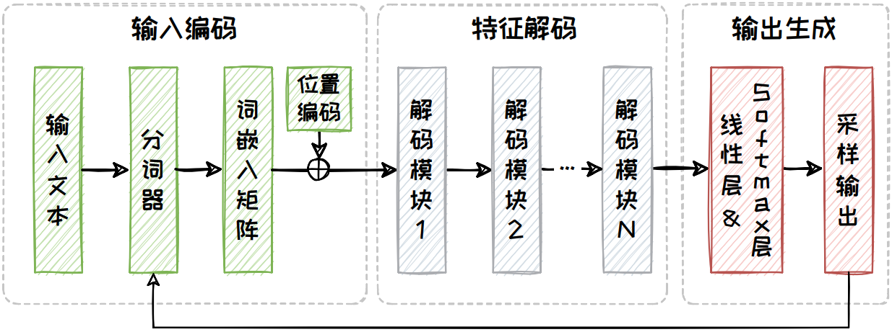
Decoder-only 架构同样包含了三个部分，分别是输入编码部分、特征解码部分以及输出生成部分
Decoder-only 架构的核心特点在于省略了每个编码模块中的交叉注意力子模块，这也是其与传统 Encoder-Decoder 架构中解码器部分的主要区别
适用任务
Decoder-only 架构进一步删除了 Encoder-Decoder 架构中的编码器部分，从而 降低了模型本身的计算复杂度。这一架构的模型使用掩码（Mask）操作确保在每 个时间步生成当前 Token 时只能访问先前的 Token，并通过自回归生成机制，从起 始 Token 开始逐步生成文本。大规模预训练数据的加持使得 Decoder-only 架构的 模型能够生成高质量、连贯的文本，在自动故事生成、新闻文章生成此类不依赖 于特定的输入文本的无条件文本生成任务中表现出色
Decoder-only 架构的代表性大语言模型：Decoder-only 架构模型的概念最早可以追溯到 2018 年发布的 GPT-1 模型，2020 年 GPT-3 的突破性成功，使得 Decoder-only 架构开始被广泛应用于各种大语言模型中，其中最为流行的有 OpenAI 提出的 GPT 系列、Meta 提出的 LLaMA 系列等，但从第三代开始，GPT 系列逐渐走向了闭源。而 LLaMA 系列虽然起步较晚， 但凭借着同样出色的性能以及始终坚持的开源道路，也在 Decoder-only 架构领域 占据了一席之地。
GPT 模型
GPT 大语言模型构建流程
根据 OpenAI 联合创始人 Andrej Karpathy 在微软 Build 2023 大会上公开的信息，OpenAI 使用 的大语言模型构建流程如下图所示

预训练（Pretraining）
利用海量的训练数据（数据来自互联网网页、维基百科、书籍、 GitHub、论文、问答网站等），构建包含数千亿甚至数万亿单词的具有多样性的内容。利用由数千块高性能 GPU 和高速网络组成的超级计算机，花费数十天完成深度神经网络参数训练，构建基础模 型（Base Model）。基础模型对长文本进行建模，使模型具有语言生成能力，根据输入的提示词，模型可以生成文本补全句子。
根据相关论文，GPT-3 完成一次训练的总计算量是 3640PFLOPS，按照 NVIDIA A100 80GB GPU 和平均利用率达到 50% 计算，需要花费近一个月的时间使用 1000 块 GPU 完成。由于 GPT-3 的训练采用 NVIDIA V100 32GB GPU，其实际计算成本远高于上述计算。
有监督微调（Supervised Fine Tuning，SFT）
利用少量高质量数据集，通过 有监督训练使模型具备问题回答、翻译、写作等能力。有监督微调的数据包含用户输入的提示词和对应的理想输出结果。用户输入包括问题、闲聊对话、任务指令等多种形式和任务。
例如：提示词：TP-LINK 总部在哪里？
理想回答：TP-LINK 总部位于中国广东省深圳市的高新技术产业园区
利用这些有监督数据，使用与预训练阶段相同的语言模型训练算法，在基础模型的基础上进行训 练，得到有监督微调模型（SFT 模型）。经过训练的 SFT 模型具备初步的指令理解能力和上下文理解能力，能够完成开放领域问答、阅读理解、翻译、生成代码等任务，也具备了一定的对未知任 务的泛化能力。
奖励建模（Reward Modeling）
目标是构建一个文本质量对比模型。对于同一个提示词， SFT 模型对给出的多个不同输出结果的质量进行排序。奖励模型可以通过二分类模型，对输入的两个结果之间的优劣进行判断。由于奖励模型的准确率对强化学习阶段的效果有至关重要的影响，因此通常需要大规模的训 练数据对该模型进行训练。Andrej Karpathy 在报告中指出，该部分需要百万量级的对比数据标注， 而且其中很多标注需要很长时间才能完成。
强化学习（Reinforcement Learning，RL）
根据数十万条提示词，利用前一阶段训练的奖励 模型，给出 SFT 模型对提示词回答结果的质量评估，并与语言模型建模目标综合得到更好的效果。 该阶段使用的提示词数量与有监督微调阶段类似，数量在十万个量级，并且不需要人工提前给出该提示词所对应的理想回复。
GPT 发展历程
2018 年 6 月，OpenAI 发布了第一个版本的 GPT （Generative Pre-Training）模型，被称为 GPT-1。GPT-1 开创了 Decoder-only 架构下，通过下一词预测解决无监督文本生成的先河，为自然语言处理领域带来了革命性的影响。GPT-1 具备原生的文本生成能力。但受限于训练数据量和模型参数数量，其生成能力还不足以用于解决实际问题。此外，由于其单向注意力机制的限制，其全面理解上下文的能力也有所欠缺。
2019 年 2 月，OpenAI 发布了 GPT 系列的第二代 产品 GPT-2。相较于 GPT-1，GPT-2 在模型规模和预训练样本的质量上都进行了 显著的提升，显著增强了模型的任务泛化能力。
为了进一步提升任务泛化能力，OpenAI 于 2020 年 6 月推出了第三代模型 GPT-3。与前两代模型相比，GPT-3 在模型规模和预训练语料上进一步提升，并涌现出了优良的上下文学习（In-Context Learning, ICL）能力。在上下文学习能力的加持下，GPT-3 可以在不进行微调的情况下，仅通过任务描述或少量示例即可完成多 样化的下游任务。
在 GPT-3 的基础上，OpenAI 进一步推出了一系列衍生模型。其中，最具启发意义的是 InstructGPT，其也是 ChatGPT 的前身。它通 过引入了人类反馈强化学习（Reinforcement Learning from Human Feedback, RLHF）， 显著提升了模型对用户指令的响应能力，具体过程如下
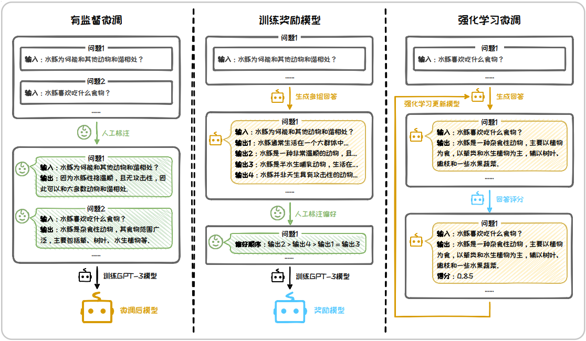
整体可以分为以下三个步骤：
有监督微调：收集大量“问题-人 类回答”对作为训练样本，对大语言模型进行微调
所谓的微调实际上就是对一个已经训练好的模型，冻结模型部分权重，再用特定训练集重新训练并更新其余权重
训练奖励模型：针对每个 输入，让模型生成多个候选输出，并由人工对其进行质量评估和排名，构成偏好数 据集。用此偏好数据集训练一个奖励模型，使其可以对输出是否符合人类偏好进行打分
强化学习微调：基于上一步中得到的奖励模型，使用强化学习方法优 化第一步中的语言模型，即在语言模型生成输出后，奖励模型对其进行评分，强化 学习算法根据这些评分调整模型参数，以提升高质量输出的概率
OpenAI 于 2022 年 11 月推出了聊天机器人（ChatGPTChat Generative Pretrained Transformer） 。ChatGPT“一鸣惊人”，以强大的对话能力展示出令人 惊讶的智能，一度燃起了 ChatGPT 是否可以通过“图灵测试”的讨论。此外，用 户可以通过 OpenAI 提供的网页端或 API 轻松使用预训练后的 ChatGPT 模型，而 无需在本地部署，标志着一种新的服务模式 LLMaaS(LLM as a Service) 的出现。但是，从 ChatGPT 起，GPT 系列模型走向闭源。
四个月后，OpenAI 于 2023 年 3 月继续发布了 GPT-4 模型。相较于 ChatGPT， GPT-4 在理解复杂语境、捕捉语言细微差别、生成连贯文本等任务上进一步提升， 并且能够更有效地处理数学问题、编程挑战等高级认知任务。
一年后，为了进一步提升模型性能以及用户体验，OpenAI 于 2024 年 5 月提出 了 GPT-4o。GPT-4o 模型在前代 GPT-4 的基础上，大幅提升了响应速度，显著降 低了延迟，并且还增强了多模态处理能力以及多语言支持能力。
LLAMA 系列语言模型
LLaMA（Large Language Model Meta AI）是由 Meta AI 开发的一系列大语言模 型，其模型权重在非商业许可证下向学术界开放，推动了大语言模型的“共创”和 知识共享。
由于模型开源且性能优异，Llama迅速成为了开源社区中最受欢迎的大模型之一，以Llama为核心的生态圈也由此崛起。与此同时，众多研究者将其作为基座模型，进行了继续预训练或者微调，衍生出了众多变体模型（见下图），极大地推动了大模型领域的研究进展。
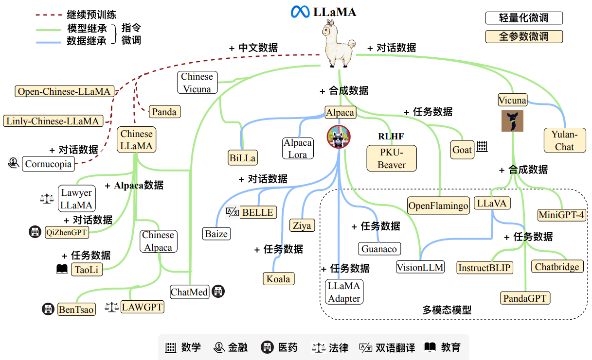
LLaMA 与 GPT 系列的主要区别在于：GPT 系列的升级主线聚焦于模型规模与预训练语料的同步提升，而 LLaMA 则在模型规模上保持相对稳定，更专注于提升预训练数据的规模，LLaMA 系列模型参数和语料大小表如下所示
| 模型 | 发布时间 | 参数量（亿）（不同比特版本的参数） | 语料规模 |
|---|---|---|---|
| LLAMA-1 | 2023.02 | 67 / 130 / 325 / 652 | 约 5TB |
| LLAMA-2 | 2023.07 | 70 / 130 / 340 / 700 | 约 7TB |
| LLAMA-3 | 2024.04 | 80 / 700 | 约 50TB |
混合专家12
想详细了解的可以看原文
随着 GPT-4、Mixtral-8x7B、DeepSeek-V3 等模型的相继推出，混合专家模型 (Mixed Expert Models，MoEs) 日益受到关注。依据大模型缩放法则，模型规模是提升性能的关键，然而规模扩大必然使计算资源大幅增加。因此，在有限计算资源预算下，如何用更少训练步数训练更大模型成为关键问题。为解决该问题，混合专家模型基于一个简洁的思想：模型不同部分（即“专 家”）专注不同任务或数据层面。
混合专家（MoE）是一种利用多个不同的子模型（或称为“专家”）来提升LLM质量的技术，其示意图如下。
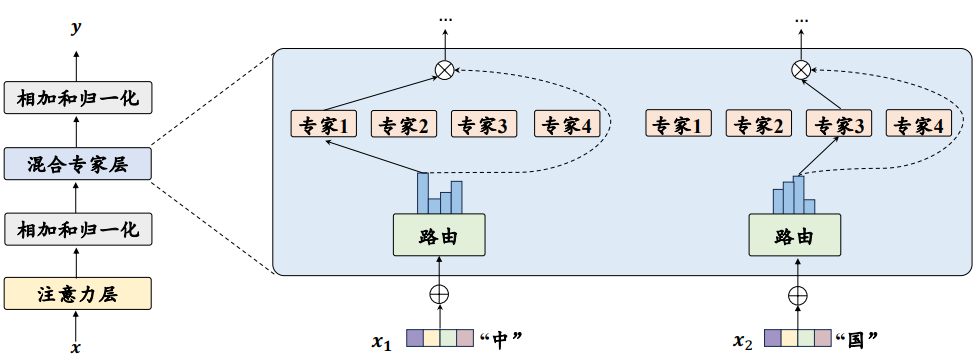
组成部分
MoE的两个主要组成部分是：
专家：每个前馈神经网络（FFNN）层现在都有一组“专家”，可以选择其中的一部分。这些“专家”通常也是 FFNN。
路由或门控网络：决定哪些词元发送到哪些专家。
在每个具有MoE的模型层中，我们会找到（相对专业化的）专家

密集和稀疏
混合专家（MoE）始于LLM的相对基本功能，即前馈神经网络（FFNN）。
简单来说传统 Transformer 中的 FFNN 被称为密集模型，因为所有参数（权重和偏置）都会被激活。没有任何东西被遗漏，所有东西都用于计算输出。
相比之下，稀疏模型仅激活其总参数的一部分，与混合专家密切相关。其基本思想是每个专家在训练过程中学习不同的信息。然后，在运行推理时，仅使用与特定任务最相关的专家。MoE 所替代的就是这种密集型的 FFNN

路由机制
现在我们有了一组专家，那么模型如何知道使用哪些专家呢？
我们可以在专家层之前添加一个路由（也称为门控网络），它是专门训练用来选择针对特定词元的专家。
路由（或门控网络）也是一个前馈神经网络（FFNN），用于根据特定输入选择专家。它可以输出概率，用于选择最匹配的专家：

对MoE来说也分为稀疏混合专家或密集混合专家
两者都使用路由器来选择专家，但稀疏MoE仅选择少数专家，而密集MoE则选择所有专家，但可能在不同的分布中。
例如，给定一组词元，MoE会将词元分配到所有专家，而稀疏MoE仅选择少数专家。
在当前的LLM状态下，当看到“MoE”时，通常指的是稀疏MoE，因为它允许使用一部分专家。这在计算上更为经济（消耗的资源更少），这是LLM的重要特性。
总结
在不同的历史阶段，三种模型架构分别展现了自身的优势。随着模型规模以 及数据规模的显著增长，Decoder-only 架构的模型逐渐占据上风，以其强大的任务 泛化性能展现出成为“大一统”的架构的潜力。当前，以 GPT-3、GPT-4 等为代表 的大型 Decoder-only 语言模型，已经发展出了与人类媲美甚至超越人类的记忆、推 理以及执行复杂任务的能力。
当下 LLM 都是 Decoder-only 架构
大语言模型微调
对于预训练数据涉及较少的垂直领域，大语言模型需要对这些领域及相应的 下游任务进行适配。这里简要介绍一下指令微调。
指令微调
指令微调是指使用自然语言形式的数据对预训练后的大语言模型进行参数微调，这一术语由谷歌研究员在 2022 年的一篇 ICLR 论文中正式提出，在另外一些参考文献中，指令微调也被称为有监督微调（Supervised Fine-tuning） 或多任务提示训练（Multitask Prompted Training）
指令微调通过使用有标注的自然语言形式的数据，对模型参数进行微调，使模型具备指令遵循（Instruction Following）能力，能够完成各类预先设计的任务，并可以在零样本情况下处理诸多下游任务。
指令微调需首先构建指令数据集，然后在该数据集上进行监督微调。
- 指令数据构建：构造这种指令数据一般有两种方式。1）数据集成。 通过使用模板将带标签的自然语言数据集，转换为指令格式的 < 输入，输出 > 对。2）大语言模型生成。通过人工收集或者手写少量指令数据，再使用 GPT-3.5-Turbo 或 GPT4 等闭源大语言模型进行指令扩展。如 InstructWild 和 Self-Instruct
- 监督微调：通过上述方法构建完数据集后，可以用完全监督的方式对预训 练模型进行微调，在给定指令和输入的情况下，通过顺序预测输出中的每个 token 来训练模型。经过微调的大语言模型能够显著提升指令遵循（Instruction-following）能力，这有助于增强其推理水平，泛化到新任务和新领域。
其中 Self-Instruct 数据生成过程如下图所示
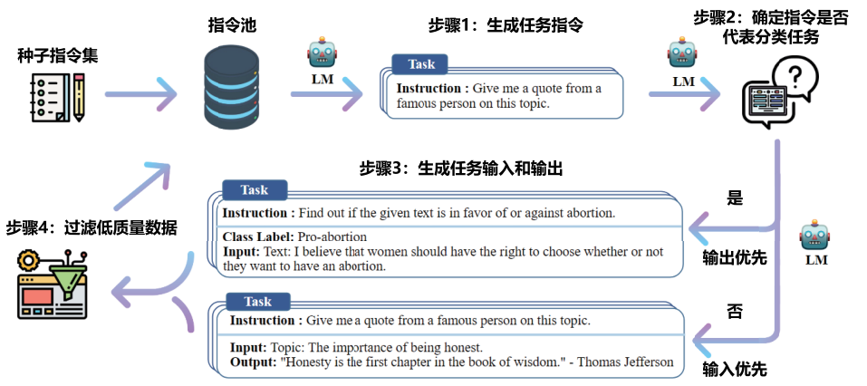
参数高效微调
参数高效微调（Parameter-Efficient Fine-Tuning，PEFT）旨在避免微调全部参数，减少在微调过程中需要更新的参数数量和计算开销，从而提高微调大语言模 型的效率。主流的 PEFT 方法可以分为三类：参数附加方法（Additional Parameters Methods），参数选择方法（Parameter Selection Methods）以及低秩适配方法（Low-Rank Adaptation Methods），其方法思想如图
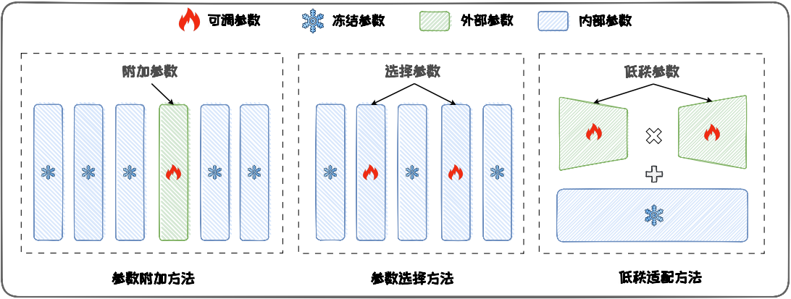
1.参数附加方法
参数附加方法（Additional Parameters Methods）在模型结构中附加新的、较小的可训练模块。在进行微调时，将原始模型参数冻结，仅微调这些新加入的模块， 从而来实现高效微调。
这些模块通常称为适应层（Adapter Layer）。它们被插入到模型的不同层之间，用于捕获特定任务的信息。由于这些新增的适应层参数量很小， 所以参数附加方法能够显著减少需要更新的参数量。典型方法包括：适配器微调 （Adapter-tuning）、提示微调（Prompt-tuning）、前缀微调（Prefix-tuning） 和代理微调（Proxy-tuning） 等。
2. 参数选择方法
参数选择方法（Parameter Selection Methods）仅选择模型的一部分参数进行微调，而冻结其余参数。选择性地微调这些关键 参数，可以在降低计算负担的同时提升模型的性能。典型的方法包括：BitFit、 Child-tuning 以及 FishMask等。
3. 低秩适配方法
低秩适配方法（Low-rank Adaptation Methods）通过低秩矩阵来近似原始权重更新矩阵，并冻结原始参数矩阵，仅微调低秩更新矩阵。由于低秩更新矩阵的参数 数量远小于原始的参数更新矩阵，因此大幅节省了微调时的内存开销。LoRA 是经典的低秩适配方法，后续有 AdaLoRA、DyLoRA 以及 DoRA 等变体被提出，进一步改进了 LoRA 性能。
对于使用 LoRA 的模型来说，由于可以将原权重与训练后权重合并，因此在推理时不存在额外的开销，LoRA 示意图如图所示
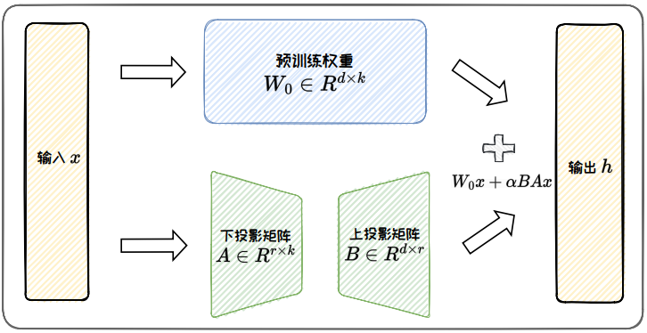
具体的算法结构如图所示
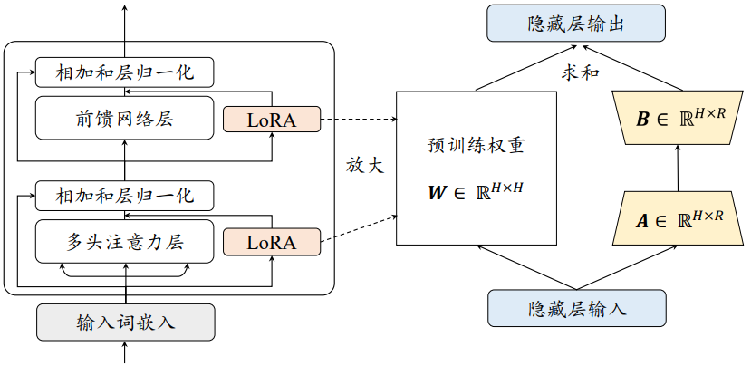
使用时，目前有许多现成的 PEFT 框架，例如 Hugging Face 开发的 开源库 HF-PEFT
大语言模型量化
模型压缩
大模型量化是一种模型压缩和优化技术，旨在减少深度学习模型的内存占用和提高推理速度，同时尽量保持模型的精度。量化后的模型权重占用更少的内存，从而可以在有限的硬件资源上部署更大的模型。
模型的压缩方法有很多，比如剪枝、量化、知识蒸馏，低秩分解等，这些方法都可以在一定程度上降低模型的参数量，从而减小模型的体积，提高模型的推理速度，降低模型的能耗。但是，这些方法在压缩模型的同时，也会带来一些问题，比如模型的精度下降、模型的推理速度不稳定等。
从感性上来说，这几种方法的差别如下

- 量化，是通过降低模型中参数的精度，从而减小模型的体积，从图像来说就是把原先的高分辨率的彩图，变成了低分辨率，但整体图片的大小是没变的。这其实意味着模型的参数量是没变的，变化的只是每个参数的粒度，就像一个文件夹里面有100个txt文档，每个文档大小为10M，量化就是保持原始的文件数量还是100个，但把每个文件大小降低为1M，这样总的文件夹大小就降低了。
- 剪枝，则是在保持模型精度不变的情况下，把模型中的部分参数删除，从而减小模型的体积，从图像上来说就是删掉了某些不重要的局部信息。这种情况下模型的参数量就变了，比如从100个txt文件，删掉了一些文件，变成了80个，但每个的大小都还是10M。
- 知识蒸馏，则是通过训练一个小的模型，使其学习一个大模型的特征，从而减小模型的体积。从图像上来说就是做了一个小的类似的东西。这种意味着参考之前的文件夹，再重新建了一个文件夹，然后用10个新的txt文件，每个文档大小为10M，实现了和之前一样的功能，虽然他们完全不一样
- 低秩分解，则是通过将模型的参数分解为低秩矩阵，从而减小模型的体积。（这个图像不好说，可以参考看SVD），这种意味着我把文件夹里面的100个txt文件，分解为了3个其他文件，然后每个文件和原始的不同（并且每个只有10K到20M不等），但文件组合起来能基本恢复100个txt文件（这里可能有点抽象，详细内容大家可以去看矩阵论的SVD分解，会有更为清晰的认识）
数值类型
LLM 在训练和推理过程中使用的三种不同精度格式：FP16（Half-precision floating-point，半精度浮点数）、BF16（Brain Floating-point，脑浮点数）和FP32（Single-precision floating-point，单精度浮点数）。这些精度格式在数值表示、计算效率、显存占用以及模型性能等方面各有优劣。
1. FP32
FP32，即float32，是单精度浮点数，使用32位二进制表示。其结构包括1位符号位、8位指数位和23位尾数位，尾数位隐含了首位的1，实际精度为24位。
特点与应用：
- 优点：FP32提供了较高的精度和较大的数值表示范围，适合对数值精度要求较高的应用场景，如科学计算和精确求解。
- 缺点：显存占用较大，计算速度相对较慢，不适合大规模并行计算。
显存占用与精度转换：
- 显存占用：FP32的显存占用是FP16和BF16的两倍。
- 精度转换：在PyTorch中，FP32与FP16、BF16之间的转换可通过
.to()方法指定dtype实现。
2. FP16
FP16，即float16，是半精度浮点数，使用16位二进制表示。其结构包括1位符号位、5位指数位和10位尾数位。FP16的指数位通过引入偏置值15来表示范围从-14到+15的整数部分，尾数位隐含了首位的1，因此实际精度为11位。
特点与应用：
- 优点：FP16显著减少了显存占用，加快了计算速度，适合在GPU上进行大规模并行计算。
- 缺点：由于精度较低，可能导致数值溢出或下溢，影响模型训练的稳定性和准确性。
显存占用与精度转换：
- 显存占用：FP16相比FP32减少了一半的显存需求。
- 精度转换：在PyTorch中，可以使用
.to(torch.float16)或.half()方法将张量转换为FP16格式，反之使用.to(torch.float32)或.float()转换为FP32。
3. BF16
BF16，即bfloat16，是一种专为深度学习设计的浮点数格式，同样使用16位二进制表示。其结构包括1位符号位、8位指数位和7位尾数位，尾数位同样隐含了首位的1，实际精度为8位。
特点与应用：
- 优点：BF16在保持较低显存占用的同时，通过增加指数位的宽度，扩大了数值表示范围，有效减少了数值溢出问题，适合深度学习中的梯度累积和反向传播。
- 缺点：相比FP16，BF16的尾数位宽度减少，导致精度有所下降。
显存占用与精度转换：
- 显存占用：与FP16相同，BF16也减少了一半的显存需求。
- 精度转换：在PyTorch中，BF16的转换方法与FP16类似，使用
.to(torch.bfloat16)或.bfloat16()进行转换。
量化
量化（Quantization）是一种广泛应用的技术，将大语言模型的权重和激活值从高比特宽度转换为低比特宽度表示，从而显著降低计算成本和内存开销。具体来说，许多量化方法通过将 FP16 浮点张量转化为低比特整数张量来实现。在神经网络压缩中，量化通常是指从浮点数到整数的映射过程，目前比较常用的是 8 比特整数量化，即 INT8量化。
模型量化方法又可以根据在模型训练完成后，还是在模型训练过程中进一步细分为：量化感知训练（Quantization-Aware Training，QAT）和训练后量化（Post-Training Quantization，PTQ），其区别如下图所示。

量化感知训练 QAT 是将训练过的模型量化后又再进行重训练。由于定点数值无法用于反向梯度计算，实际操作过程是在某些op前插入伪量化节点（fake quantization nodes）， 用于在训练时获取流经该op的数据的截断值，便于在部署量化模型时对节点进行量化时使用。我们需要在训练中通过不断优化精度来获取最佳的量化参数。由于它需要对模型进行训练, 对操作人员技术要求较高。
实际就是通过在模型训练过程中适应低精度表示并减少量化后带来的损失，其主要目标是减少模型的存储和计算复杂性，而无需对模型架构进行修改或进行重新训练。然而，训练 LLMs 通常需要大量的训练数据和计算资源，这可能成为 QAT 实施的瓶颈。因此，当前的研究重点是减少数据需求或减轻 QAT 实施的计算负担。
训练后量化 PTQ 是使用一批校准数据对训练好的模型进行校准, 将训练过的FP32网络直接转换为定点计算的网络，过程中无需对原始模型进行任何训练。只对几个超参数调整就可完成量化过程, 且过程简单快速, 无需训练, 因此此方法已被广泛应用于大量的端侧和云侧部署场景，我们优先推荐您尝试PTQ方法来查看是否满足您的部署精度和性能要求。
实际就是一种对已完成训练的模型进行量化的方法， 无需重新训练原有模型，不过尽管 PTQ 方法在较小规模模型上已经广泛的研究，但直接将现有的模型量化技术应用于大语言模型仍然面临诸多挑战
Prompt 工程
随着模型训练数据规模和参数数量的持续增长，大语言模型突破了泛化瓶颈， 并涌现出了强大的指令跟随能力。我们能够通过精心编写的指令输入，即 Prompt，来引导模型适应各种下游任务，从而避免了传统微调方法所带来的高昂计算成本。
经过良好设计的 Prompt 通常由任务说明、上下文、问题、输出格式 四个基本元素组成：
- 任务说明——向模型明确提出具体的任务要求。任务说明应当清晰、直接， 并尽可能详细地描述期望模型完成的任务。
- 上下文——向模型提供的任务相关背景信息，用以增强其对任务的理解以及 提供解决任务的思路。上下文可以包括特定的知识前提、目标受众的背景、 相关任务的示例，或任何有助于模型更好地理解任务的信息。
- 问题——向模型描述用户的具体问题或需要处理的信息。这部分应直接涉及 用户的查询或任务，为模型提供一个明确的起点。问题可以是显式的提问， 也可以是隐式的陈述句，用以表达用户的潜在疑问。
- 输出格式——期望模型给出的回答的展示形式。这包括输出的格式，以及任 何特定的细节要求，如简洁性或详细程度。例如，可以指示模型以 JSON 格 式输出结果。
在此基础上，Prompt 工程包括多种技巧和技术，如上下文学习（In-Context Learning）和思维链（Chain of Thought）。
上下文学习和思维链提示的比较如下
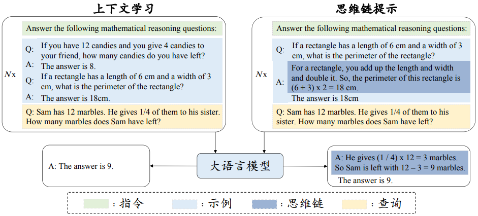
上下文学习
在 GPT-3 的论文中，OpenAI 研究团队首次提出上下文学习（In-context learning, ICL）这种特殊的提示形式。目前，上下文学习已经成为使用大语言模型解决下游任务的一种主流途径。
上下文学习使用包含包含演示示例，任务说明等元素的 Prompt 来 使得语言模型理解并学习下游任务的范式。上下文学习实现的关键在于如何设计有效的 Prompt，以引导模型理解任务的上下文和目标。通常，这些 Prompt 会包含任务说明以及一系列 的示例，模型能够从这些上下文信息中学习任务的逻辑和规则，从而在没有额外训练的情况下，生成符合任务要求的输出。
按照示例数量的不同，上下文学习可以呈现出多种形式：零样本（Zero-shot）上下文学习、单样本（One-shot）上下文学习和少样本（Few-shot） 上下文学习
思维链提示
人类在解决复杂问题时，通常会逐步构建推 理路径以导出最终答案。基于这一理念，一种创新的 Prompt 范式——思维链提示 （Chain-of-Thought，CoT）被用于引导模型进行逐步推理。
思维链提示作为上下文学习的一种扩展形式，将原始的 ⟨ 输入，输出 ⟩ 映射 关系转换为 ⟨ 输入，思维链，输出 ⟩ 这一三元组形式。在这个结构中，思维链扮演着重要的角色，它提供了一系列语义连贯且具有逻辑性的中间推理步骤，有效地建立起输入与输出之间的桥接关系。在思维链提示的作用下，大语言模型可以根据输入生成对应的思维链及答案。然而，与简单的 ⟨ 输入，输出 ⟩ 二元组相比， 思维链的获取通常更为复杂，往往需要借助人工标注的方式。目前有一些简单的 方法可以让大模型在回答问题之前生成思考过程。例如，通过向大语言模型提供 诸如 “Let’s think step by step.” 或 “Take a deep breath and work on this problem step-by-step.” 这样的诱导性指令，能够在不提供思维链示例的情况下，仍然让大语言模型先生成思维链再回答问题来提高准确率。
Prompt 技巧
规范 Prompt 编写
编写规范的 Prompt 是我们与大语言模型进行有效沟通的基础。经典的 Prompt 通常由任务说明，上下文，问题，输出格式等部分中的一个或几个组成。以下是情感分类的一个例子
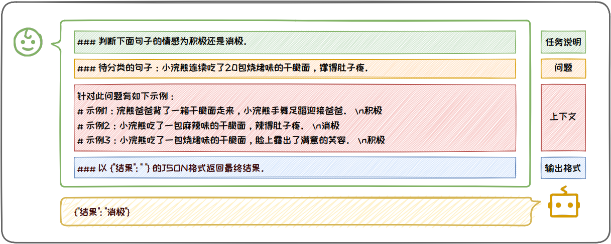
通过这个例子可以看出，在编写经典 Prompt 的过程中，Prompt 各个组成部分 都很重要，它们的规范性，直接影响模型的输出质量。
1. 任务说明要明确
明确的任务说明是构建有效 Prompt 的关键要素之一。
- 使用明确的动词：选择能够清晰表达动作的动词，如“判断”、“分类”、“生成”等，避免使用模糊的动词如“处理”或“操作”。
- 具体的名词：使用具体的名词来定义任务的输出或目标，例如“积极”和“消极”在情感分类任务中提供了明确的分类标准。
- 简洁明了：任务说明应简洁且直接，避免冗长或复杂的句子结构，使模型能 够快速抓住任务的核心要求。
- 结构化布局：在较长的 Prompt 中，将任务说明放置在开头和结尾，因为模型 通常更关注这些部分的信息。这种布局有助于确保模型首先和最后接触 到的是最关键的任务信息。
2. 上下文丰富且清晰
上下文的清晰性则要求上下文信息必须与问题紧密相关， 避免包含冗余或不必要的信息。清晰的上下文应直接指向任务的核心，减少模型 在处理信息时的混淆和误解。例如，在问答任务中，上下文应仅包含与问题直接相 关的信息，避免引入可能误导模型的无关内容。
3. 输出格式要规范
规范的输出格式对于确保模型输出的可用性和准确性至关重要。通过指定明 确的输出格式，可以使模型的输出结构化，便于下游任务直接提取和使用生成内 容。常用的输出格式包括 JSON、XML、HTML、Markdown 和 CSV 等，每种格式 都有其特定的用途和优势。
- 明确指定输出格式：在 Prompt 中明确指出希望模型使用的输出格式，如“请以 JSON 格式返回结果”，并且选择广泛接受和易于处理的输出格式，如 JSON、 CSV 等，易于解析和数据交换。
- 提供输出格式的示例：在 Prompt 中提供一个输出格式的具体示例，比如在 JSON 中明确指出关键字，帮助模型理解预期的输出结构。
4. 排版要清晰
一个优秀的 Prompt 还必然具备清晰的排版，这对于模型的理解 Prompt 至关重要。
- 使用一致的分隔符：选择并坚持使用一种或几种分隔符（如“#”、“###”、“—” 等），以区分不同的 Prompt 部分。
- 合理使用空白和缩进：通过增加空白行和适当的缩进，增强 Prompt 的可读 性，帮助模型区分不同的内容块。
- 清晰的标题和子标题：为每个部分提供清晰的标题或子标题，使模型能够快 速识别每个部分的主题。
合理归纳提问
1. 复杂问题拆解
在处理复杂问题时，我们可以将问题分解为更小、更易于理解的子问题，并逐 一解决。这一过程包括两个关键步骤：分步引导和归纳总结
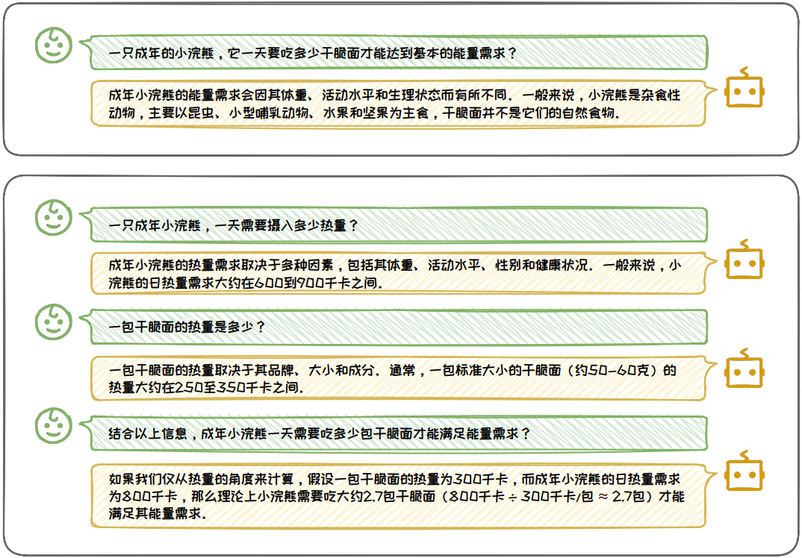
首先，在分步引导阶段，我们需将复杂问题细化为多个子问题，并引导模型针对每个子问题进行深入分析和回答。这一步骤旨在确保每个子问题都能得到详尽 的解答，从而为后续的归纳总结奠定坚实基础。其次，在归纳总结阶段，我们将各 个子问题的答案进行汇总，并综合形成最终的全面回答。这一步骤不仅有助于我 们全面把握问题的各个方面，还能确保最终答案的准确性和完整性。
善用心理暗示
1. 角色扮演
通过 Prompt 指导大语言模型扮演特定角色能够显著改善其与角色相关的技能。
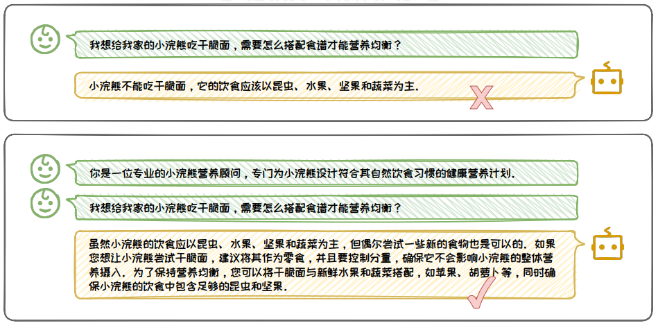
为了构建一个有效的角色，需要在指令中包含具体属性、职责、知识和技能。在设计角色设定提示时，选择对特定任务具有明显优势的角色至关重要。通过额外的描述来强调这一优势，通常可以带来更好的结果。
2. 情景带入
情景代入指的是将特定情境下所需的专业知识、历史背景等信息嵌入到模型的响应中。
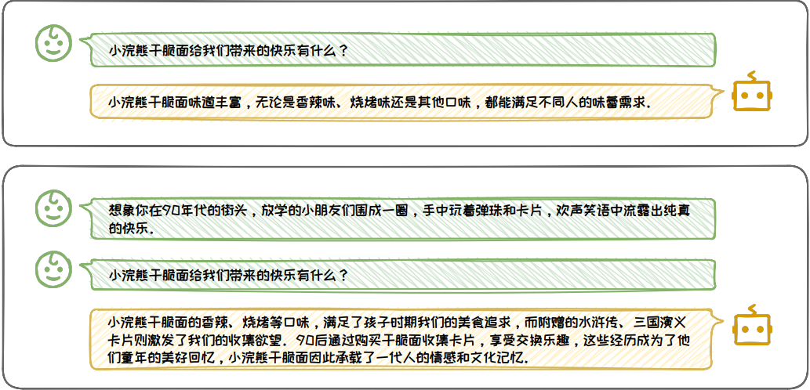
通过情景代入，模型能够深入理解并反映特定情境下的文化社会背景与现实 环境，从而生成更加丰富和有深度的回答。
相关应用
基于大语言模型的 Agent
智能体（Agent）是一种能够自主感知环境并采取行动以实现特定目标的实体。作为实现通用人工智能（AGI）的有力手段，Agent 被期望能够完成各种复杂任务，并在多样化环境中表现出类人智能。基于大语言模型的 Agent 展现出了强大的决策能力。其具备全面的通用知识，可以在缺乏、训练数据的情况下，也能进行规划、决策、工具调用等复杂的行动。
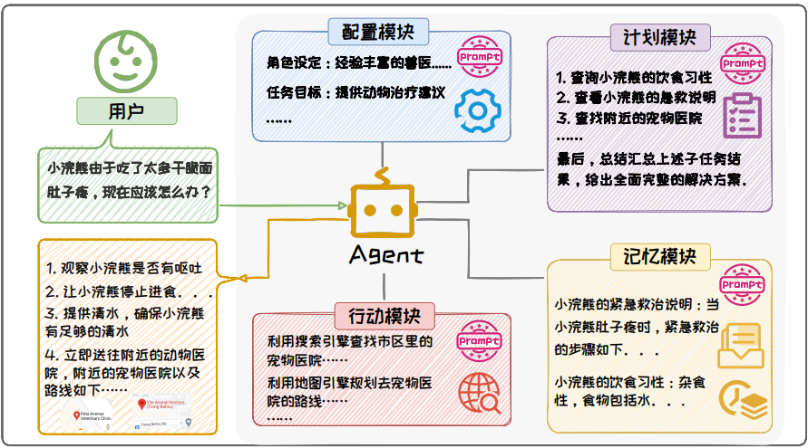
Prompt 工程技术在 Agent 中起到了重要的作用。在 Agent 系统中，大语言模型 作为核心控制器，能够完成规划、决策、行动等操作，这些操作很多都依赖 Prompt 完成。该框架主要由四大部分组成：配置模块（Profile）、记忆模块（Memory）、计划模块（Planning）和行动模块（Action）。Prompt 工程技术贯穿整个 Agent 流程，为每个模块提供支持。
数据合成
数据合成作为一种补充或替代真实数据的有效手段，因其可控性、安全性和低成本等优势而受到广泛关注。特别是利用大语言模型生成训练数据，已成为当前研究的热点议题，其通过 Prompt 工程技术，利用大语言模型强 大的思维能力、指令跟随能力，来合成高质量数据。
检索增强生成
由于训练数据的正确性、时效性和完备性可能存在不足，大语言模型在面对某些问题时无法给出正确答案，甚至出现“幻觉”， 即生成看似合理实则逻辑混乱或违背事实的回答。为了解决这些问题并进一步提 升大语言模型的生成质量，我们可以将相关信息存储在外部数据库中，供大语言模 型进行检索和调用。这种从外部数据库中检索出相关信息来辅助改善大语言模型 生成质量的系统被称之为检索增强生成（Retrieval-Augmented Generation，RAG）。
检索增强生成（RAG）旨在通过检索和整合外部知识来增强大语言模型生成 文本的准确性和丰富性，其是一个集成了外部知识库、信息检索器、大语言模型等多个功能模块的系统。RAG 利用信息检索、深度学习等多种技术为大语言模型在 生成过程中引入最新的、特定领域的知识，从而克服传统大语言模型的局限性，提供更加精准和可靠的生成内容。
检索增强生成的背景
训练数据是大语言模型知识的根本来源。训练数据在采集完成后直接用于训练模型。但是其中包含的知识可能在模型训练后又发生了更新。这将导致知识过时的问题。不仅如此，知识在训练数据采集完成后仍会新增，并且训练数据采集也 无法覆盖世间所有知识，尤其是垂域知识，这将导致知识边界的问题。此外，训练数据中还可能包含不实与偏见信息，从而导致知识偏差问题。
LLM 面临的主要问题如下
- 信息偏差/幻觉： LLM 有时会产生与客观事实不符的信息，导致用户接收到的信息不准确。RAG 通过检索数据源，辅助模型生成过程，确保输出内容的精确性和可信度，减少信息偏差。
- 知识更新滞后性： LLM 基于静态的数据集训练，这可能导致模型的知识更新滞后，无法及时反映最新的信息动态。RAG 通过实时检索最新数据，保持内容的时效性，确保信息的持续更新和准确性。
- 内容不可追溯： LLM 生成的内容往往缺乏明确的信息来源，影响内容的可信度。RAG 将生成内容与检索到的原始资料建立链接，增强了内容的可追溯性，从而提升了用户对生成内容的信任度。
- 领域专业知识能力欠缺： LLM 在处理特定领域的专业知识时，效果可能不太理想，这可能会影响到其在相关领域的回答质量。RAG 通过检索特定领域的相关文档，为模型提供丰富的上下文信息，从而提升了在专业领域内的问题回答质量和深度。
- 推理能力限制： 面对复杂问题时，LLM 可能缺乏必要的推理能力，这影响了其对问题的理解和回答。RAG 结合检索到的信息和模型的生成能力，通过提供额外的背景知识和数据支持，增强了模型的推理和理解能力。
- 应用场景适应性受限： LLM 需在多样化的应用场景中保持高效和准确，但单一模型可能难以全面适应所有场景。RAG 使得 LLM 能够通过检索对应应用场景数据的方式，灵活适应问答系统、推荐系统等多种应用场景。
- 长文本处理能力较弱： LLM 在理解和生成长篇内容时受限于有限的上下文窗口，且必须按顺序处理内容，输入越长，速度越慢。RAG 通过检索和整合长文本信息，强化了模型对长上下文的理解和生成，有效突破了输入长度的限制，同时降低了调用成本，并提升了整体的处理效率。
这些问题的成因主要是大语言模型缺乏相应的知识或生成过程出现了偏差，导致其无法正确回答。借鉴人类的解决方式，当我们遇到无法回答的问题时，通常会借助搜索引擎或查阅书 籍资料来获取相关信息，进而帮助我们得出正确答案。这种思路便是检索增强生成（Retrieval-Augmented Generation，RAG) 的核心思想。
RAG 的概念最早出现在 Facebook AI Research 的论文 Retrieval-Augmented Generation for Knowledge-Intensive NLP Tasks 中。其通常集成了外部知识库（Corpus ）、信息检索器（Retriever）、生成器（Generator，即大语言模型）等多个功能模块。
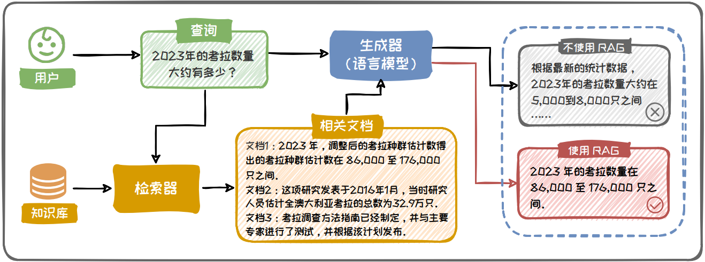
上图为 RAG 的基本工作流程。
用户输入一 个问题“2023 年的考拉数量有多少？”
首先，该问题会传递给 RAG 框架的检索器 模块，检索器从知识库中检索相关的知识文档，其中包含了与 2023 年的考拉数量 相关的信息；
接下来，这些信息通过 Prompt 的形式传递给大语言模型（大语言模 型利用外部知识的形式是多样的，通过 Prompt 进行上下文学习是其中最常用的形式）；
最终得出了正确的答案：“2023 年的考拉数量在 86,000 至 176,000 只之间。”
然而，同样的问题，如果让大语言模型在不使用 RAG 的情况下直接回答，则无法得到正确的答案，这说明了 RAG 系统的有效性。
多模态大模型检索增强过程如下图所示
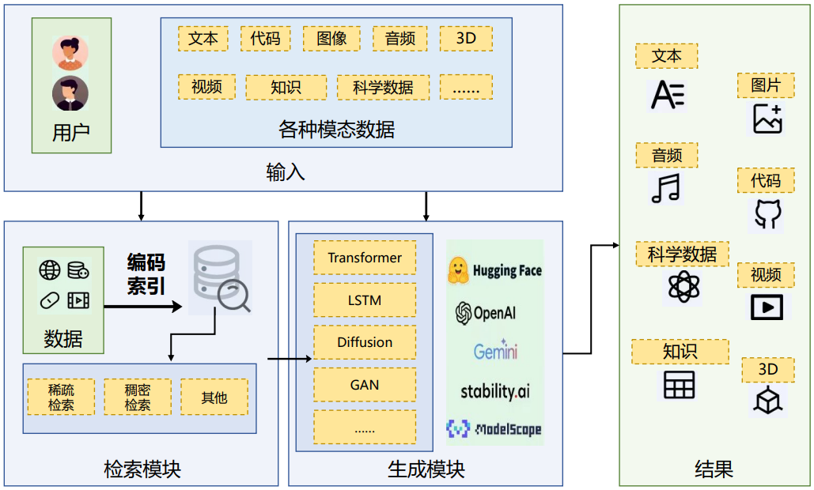
2024 是 RAG 井喷式发展的一年，关于 RAG 的设计、训练、优化和评估网上有非常多的内容，在这里就不展开说明了
检索增强生成 vs 微调
RAG 和 微调的对比可以参考下表
| 特征比较 | RAG | 微调 |
|---|---|---|
| 知识更新 | 直接更新检索知识库，无需重新训练。信息更新成本低，适合动态变化的数据。 | 通常需要重新训练来保持知识和数据的更新。更新成本高，适合静态数据。 |
| 外部知识 | 擅长利用外部资源，特别适合处理文档或其他结构化/非结构化数据库。 | 将外部知识学习到 LLM 内部。 |
| 数据处理 | 对数据的处理和操作要求极低。 | 依赖于构建高质量的数据集，有限的数据集可能无法显著提高性能。 |
| 模型定制 | 侧重于信息检索和融合外部知识，但可能无法充分定制模型行为或写作风格。 | 可以根据特定风格或术语调整 LLM 行为、写作风格或特定领域知识。 |
| 可解释性 | 可以追溯到具体的数据来源，有较好的可解释性和可追踪性。 | 黑盒子，可解释性相对较低。 |
| 计算资源 | 需要额外的资源来支持检索机制和数据库的维护。 | 依赖高质量的训练数据集和微调目标，对计算资源的要求较高。 |
| 推理延迟 | 增加了检索步骤的耗时 | 单纯 LLM 生成的耗时 |
| 降低幻觉 | 通过检索到的真实信息生成回答，降低了产生幻觉的概率。 | 模型学习特定领域的数据有助于减少幻觉，但面对未见过的输入时仍可能出现幻觉。 |
| 伦理隐私 | 检索和使用外部数据可能引发伦理和隐私方面的问题。 | 训练数据中的敏感信息需要妥善处理，以防泄露。 |
现有检索增强生成框架
当前已有诸多成熟开源框架可供选择，包括 LangChain 、LlamaIndex、Dify 以及 GitHub 上能搜到很多其他的 RAG 框架（AnythingLLM、MaxKB、RAGFlow）
RAG 案例
- Datawhale 知识库助手 ：个人知识库助手
- 天机：人情世故大模型
相关资源
LLM API 服务平台
- Groq
- 硅基流动
- 火山引擎
- 文心千帆
- DashScope
- aisuite
- DeerAPI
- Qwen-Chat
- Deepseek-v3
社区
- 魔乐社区
- HuggingFace
- ModelScope
- WiseModel
Reference
[1] 大型语言模型简史
[2] LLM Book
[3]:面向开发者的大模型手册 - LLM Cookbook
[4]:💻 动手学 Ollama 🦙 (datawhalechina.github.io)
[5]:LLM Deploy
[6]:大模型理论基础
[7]:动手学大模型应用开发
[8]:HuggingLLM
[9]:《大模型基础》
[10]:《大语言模型 从理论到实践》
[11]:可视化理解大语言模型前向计算过程